Q01 · 15.5 / Genomic Imprinting 正式分類
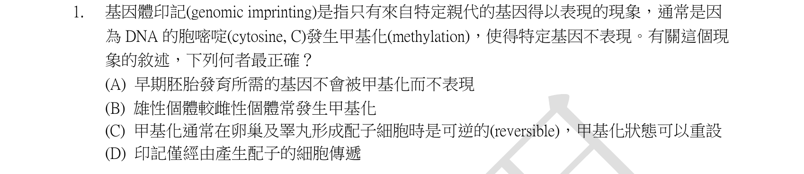
本地原卷PDF2 · 同年原答案PDF1（封存轉存本） · 已核對同年轉存生物釋疑PDF6–7（未列本題）
官方採計／來源：C 原答案：C
未列本輪取得同年公告的生物Q4、5、16；依原表，不宣稱不存在其他未取得公告
主分類：Ch15 The Chromosomal Basis of Inheritance
15.5 / Genomic Imprinting
目錄行981；條目起始印刷頁310；實際目錄 PDF39
次分類：Ch18 Regulation of Gene Expression
18.2 / Regulation of Chromatin Structure
目錄行1123；條目起始印刷頁371；實際目錄 PDF39
主分類理由：15.5 / Genomic Imprinting：親源特異印記的建立、維持與生殖細胞重設正是本題核心。
次分類理由：18.2 / Regulation of Chromatin Structure：DNA甲基化／染色質調控解釋印記的分子基礎。
科學說明：原表C。印記是可重設的表觀遺傳標記，在生殖系依新一代親本性別重建，體細胞分裂通常維持。可遺傳不等於不可逆，也不是只有生殖細胞才有印記表現。
來源涵蓋範圍：依本地教材實際最小目錄與列示正文判斷；原題限定與來源差異另列，正文小標不冒充目錄。
教材正文：印刷310／PDF359、印刷311／PDF360、印刷371／PDF420、印刷372／PDF421
補充來源：本題未另列課本外來源
另行比較：是否改列一般染色質調控，或把印記誤作不可逆？
重新看C的配子生成重設與D的僅字，主仍15.5 Genomic Imprinting；保留18.2同機制次目。
結論：證據確認，分類疑義已解決。完整覆核紀錄
Q02 · 14.3 / Extending Mendelian Genetics for a Single Gene 正式分類
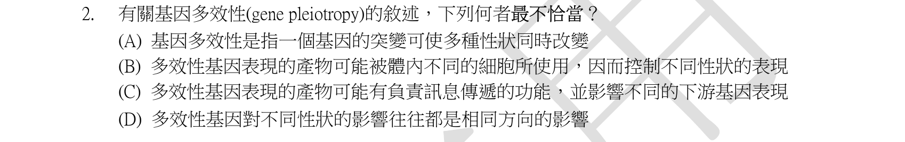
本地原卷PDF2 · 同年原答案PDF1（封存轉存本） · 已核對同年轉存生物釋疑PDF6–7（未列本題）
官方採計／來源：D 原答案：D
未列本輪取得同年公告的生物Q4、5、16；依原表，不宣稱不存在其他未取得公告
主分類：Ch14 Mendel and the Gene Idea
14.3 / Extending Mendelian Genetics for a Single Gene
目錄行892；條目起始印刷頁278；實際目錄 PDF38
主分類理由：14.3 / Extending Mendelian Genetics for a Single Gene：一個基因影響多種表徵是一因多效，屬單基因孟德爾延伸。
次分類理由：無另列最小次條目；A–C描述一基因多效，D的同方向過度概括；最小單基因延伸條目確定。
科學說明：原表D。一個基因可透過不同生化或發育路徑影響多種性狀，各效應不必都同向有利或有害。一因多效與多基因控制同一性狀不能混同。
來源涵蓋範圍：依本地教材實際最小目錄與列示正文判斷；原題限定與來源差異另列，正文小標不冒充目錄。
教材正文：印刷280／PDF329、印刷281／PDF330
補充來源：本題未另列課本外來源
Q03 · 16.3 / A chromosome consists of a DNA molecule packed together with proteins 正式分類
本地原卷PDF2 · 同年原答案PDF1（封存轉存本） · 已核對同年轉存生物釋疑PDF6–7（未列本題）
官方採計／來源：B 原答案：B
未列本輪取得同年公告的生物Q4、5、16；依原表，不宣稱不存在其他未取得公告
主分類：Ch16 The Molecular Basis of Inheritance
16.3 / A chromosome consists of a DNA molecule packed together with proteins
目錄行1022；條目起始印刷頁330；實際目錄 PDF39
主分類理由：16.3 / A chromosome consists of a DNA molecule packed together with proteins：H1與染色質高階包裝直接屬16.3，真實目錄沒有更細子目。
次分類理由：無另列最小次條目；H1和B的30nm命題脈絡明确，新版p330–331與1994研究的範圍差異保留；16.3目錄已無更小子目。
科學說明：原表B。H1是傳統30nm纖維模型的linker histone。本地12e p330圖16.23改以10nm纖維為基本構成，明說30nm為較舊模型且可能只在特定細胞或時段存在；p331示condensin迴圈。未將30nm當成所有活細胞的一致結構。
來源涵蓋範圍：教材原理加具名補充；實讀段、時代與物種限制及下載失敗分存，不宣稱教材直接涵蓋全部專名。
教材正文：印刷330／PDF379、印刷331／PDF380、印刷332／PDF381
補充來源：S03
另行比較：telomere、looped domains與centromere是否更直接？
H1和B的30nm命題脈絡明确，新版p330–331與1994研究的範圍差異保留；16.3目錄已無更小子目。
結論：證據確認，分類疑義已解決。完整覆核紀錄
Q04 · 17.3 / Split Genes and RNA Splicing 正式分類
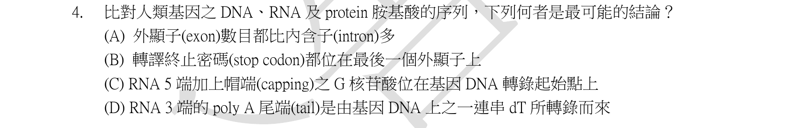
本地原卷PDF2 · 同年原答案PDF1（封存轉存本） · 同年釋疑轉存PDF6
官方採計／來源：A 原答案：A
維持原答案A
主分類：Ch17 Gene Expression: From Gene to Protein
17.3 / Split Genes and RNA Splicing
目錄行1062；條目起始印刷頁345；實際目錄 PDF39
次分類：Ch17 Gene Expression: From Gene to Protein
17.3 / Alteration of mRNA Ends
目錄行1059；條目起始印刷頁345；實際目錄 PDF39
主分類理由：17.3 / Split Genes and RNA Splicing：內含子移除與外顯子保留的區段計數決定答案。
次分類理由：17.3 / Alteration of mRNA Ends：5′端帽及poly(A)尾的添加用於排除端部處理選項。
科學說明：原表A，同年釋疑Q4維持A。在一條連續、標準線性前驅RNA的同一剪接路徑上，內含子分隔外顯子，外顯子數=內含子數+1；不可混用不同異構轉錄本的合計。帽與poly(A)尾是轉錄後添加；stop codon不保證位於最後外顯子，3′UTR也可能有剪接。
來源涵蓋範圍：依本地教材實際最小目錄與列示正文判斷；原題限定與來源差異另列，正文小標不冒充目錄。
教材正文：印刷345／PDF394、印刷346／PDF395、印刷347／PDF396
補充來源：本題未另列課本外來源
另行比較：停止密碼是否必在最後外顯子？
對原圖B的都與同年釋疑Q4，保留3′UTR剪接反例及A計数的單一路徑假設；主剪接、次端部修飾。
結論：證據確認，分類疑義已解決。完整覆核紀錄
Q05 · 46.5 / Conception, Embryonic Development, and Birth 正式分類
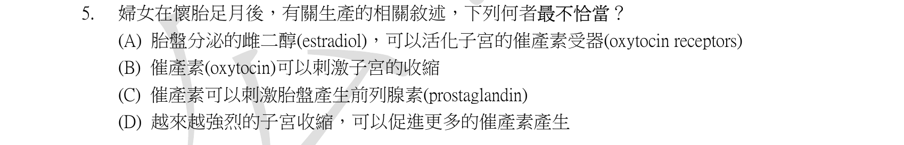
本地原卷PDF2 · 同年原答案PDF1（封存轉存本） · 同年釋疑轉存PDF7
官方採計／來源：A 原答案：A
維持原答案A
主分類：Ch46 Animal Reproduction
46.5 / Conception, Embryonic Development, and Birth
目錄行3114；條目起始印刷頁1034；實際目錄 PDF48
主分類理由：46.5 / Conception, Embryonic Development, and Birth：分娩正回饋及妊娠內分泌屬46.5的生產段。
次分類理由：無另列最小次條目；不能。原圖、釋疑與p1036已比對，Endotext不同來源說明另存；官方A不變，分類仍分娩控制。
科學說明：原表A，同年釋疑Q5維持A並稱雌二醇來自卵巢；本地p1036圖46.18也畫卵巢來源。然而人類第一孕期後胎盤為循環雌二醇主要來源，原題把胎盤作錯誤理由與Endotext不一致。雌激素主要增加催產素受體表達及敏感性，不是催產素受體的直接配體。官方A與科學來源差異並存，不自行改採計。
來源涵蓋範圍：教材原理加具名補充；實讀段、時代與物種限制及下載失敗分存，不宣稱教材直接涵蓋全部專名。
教材正文：印刷1034／PDF1083、印刷1035／PDF1084、印刷1036／PDF1085、印刷1037／PDF1086、印刷1038／PDF1087、印刷1039／PDF1088
補充來源：S05
另行比較：能否以胎盤雌二醇直接判A錯並消除來源差異？
不能。原圖、釋疑與p1036已比對，Endotext不同來源說明另存；官方A不變，分類仍分娩控制。
結論：證據確認，分類疑義已解決。完整覆核紀錄
Q06 · 41.5 / Regulation of Appetite and Consumption 正式分類
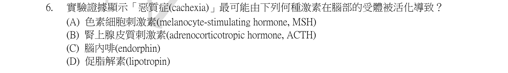
本地原卷PDF2 · 同年原答案PDF1（封存轉存本） · 已核對同年轉存生物釋疑PDF6–7（未列本題）
官方採計／來源：A 原答案：A
未列本輪取得同年公告的生物Q4、5、16；依原表，不宣稱不存在其他未取得公告
主分類：Ch41 Animal Nutrition
41.5 / Regulation of Appetite and Consumption
目錄行2746；條目起始印刷頁917；實際目錄 PDF46
主分類理由：41.5 / Regulation of Appetite and Consumption：中樞激素調控食慾下降是惡病質題目的功能分類主軸。
次分類理由：無另列最小次條目；题問腦部受體與惡病質，研究MC4R食慾代謝作用支援41.5；不因MSH字面轉到皮膚。
科學說明：原表A。MSH／melanocortin作用於下視丘MC4R可抑食並提高代謝；腫瘤或LPS小鼠實驗支持阻斷此途徑緩解體重與瘦體組織流失。本地p917提供食慾迴路背景，未直接講MSH與cachexia；不能把複雜惡病質歸為所有病人唯一病因。
來源涵蓋範圍：教材原理加具名補充；實讀段、時代與物種限制及下載失敗分存，不宣稱教材直接涵蓋全部專名。
教材正文：印刷917／PDF966、印刷918／PDF967、印刷919／PDF968
補充來源：S06
另行比較：是否僅列皮膚色素激素？
题問腦部受體與惡病質，研究MC4R食慾代謝作用支援41.5；不因MSH字面轉到皮膚。
結論：證據確認，分類疑義已解決。完整覆核紀錄
Q07 · 43.1 / Innate Immunity of Vertebrates 正式分類
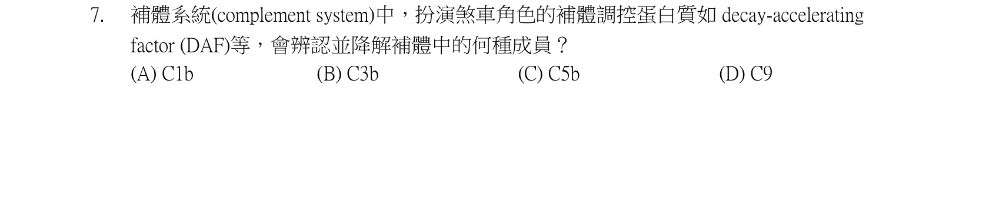
本地原卷PDF2 · 同年原答案PDF1（封存轉存本） · 已核對同年轉存生物釋疑PDF6–7（未列本題）
官方採計／來源：B 原答案：B
未列本輪取得同年公告的生物Q4、5、16；依原表，不宣稱不存在其他未取得公告
主分類：Ch43 The Immune System
43.1 / Innate Immunity of Vertebrates
目錄行2870；條目起始印刷頁954；實際目錄 PDF47
主分類理由：43.1 / Innate Immunity of Vertebrates：補體調理與膜攻擊屬脊椎動物先天免疫體液成分。
次分類理由：無另列最小次條目；原題為辨認C3b，轉化酶解離與factor I蛋白水解不可混為一談；分類確定先天免疫補體。
科學說明：原表B，即C3b。C3b可調理並參與C5轉化酶，後續C5b啟動膜攻擊複合體；C3a／C5a有發炎作用。原題稱DAF使C3b裂解不精確：DAF促轉化酶解離，factor I才在CR1／MCP等輔因子協助下切C3b。答案辨識與此機制差異分記。
來源涵蓋範圍：教材原理加具名補充；實讀段、時代與物種限制及下載失敗分存，不宣稱教材直接涵蓋全部專名。
教材正文：印刷954／PDF1003、印刷955／PDF1004、印刷956／PDF1005、印刷957／PDF1006、印刷966／PDF1015、印刷967／PDF1016
補充來源：S07
另行比較：DAF是直接裂解C3b的蛋白酶嗎？
原題為辨認C3b，轉化酶解離與factor I蛋白水解不可混為一談；分類確定先天免疫補體。
結論：證據確認，分類疑義已解決。完整覆核紀錄
Q08 · 49.4 / Long-Term Potentiation 正式分類
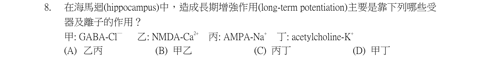
本地原卷PDF3 · 同年原答案PDF1（封存轉存本） · 已核對同年轉存生物釋疑PDF6–7（未列本題）
官方採計／來源：A 原答案：A
未列本輪取得同年公告的生物Q4、5、16；依原表，不宣稱不存在其他未取得公告
主分類：Ch49 Nervous Systems
49.4 / Long-Term Potentiation
目錄行3296；條目起始印刷頁1101；實際目錄 PDF48
次分類：Ch49 Nervous Systems
49.4 / Memory and Learning
目錄行3293；條目起始印刷頁1100；實際目錄 PDF48
主分類理由：49.4 / Long-Term Potentiation：NMDA／AMPA受體及突觸增強的機制直接對應長期增益。
次分類理由：49.4 / Memory and Learning：記憶形成提供LTP在學習中的功能脈絡。
科學說明：原表A，乙與丙。NMDA受體在去除Mg2+阻塞後可通Ca2+；AMPA主要介導快速Na+流入，LTP可增加AMPA效應。不能把兩類受體的離子通透或電壓條件互換。
來源涵蓋範圍：依本地教材實際最小目錄與列示正文判斷；原題限定與來源差異另列，正文小標不冒充目錄。
教材正文：印刷1100／PDF1149、印刷1101／PDF1150、印刷1102／PDF1151
補充來源：本題未另列課本外來源
另行比較：是否列一般突觸傳遞即可？
明問海馬迴LTP且乙丙是NMDA-Ca／AMPA-Na，最小LTP主目優於一般神經突觸。
結論：證據確認，分類疑義已解決。完整覆核紀錄
Q09 · 47.2 / Gastrulation 正式分類
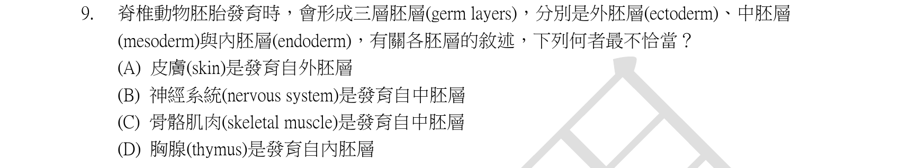
本地原卷PDF3 · 同年原答案PDF1（封存轉存本） · 已核對同年轉存生物釋疑PDF6–7（未列本題）
官方採計／來源：B 原答案：B
未列本輪取得同年公告的生物Q4、5、16；依原表，不宣稱不存在其他未取得公告
主分類：Ch47 Animal Development
47.2 / Gastrulation
目錄行3144；條目起始印刷頁1049；實際目錄 PDF48
次分類：Ch47 Animal Development
47.2 / Organogenesis
目錄行3150；條目起始印刷頁1054；實際目錄 PDF48
主分類理由：47.2 / Gastrulation：器官的外中內胚層來源由原腸形成建立。
次分類理由：47.2 / Organogenesis：胚層後續分化成神經等器官提供器官生成的對照。
科學說明：原表B。神經系統源於外胚層。皮膚須區分表皮外胚層與大部分真皮中胚層；胸腺的上皮與入居淋巴細胞來源不同，不能用整個器官一概抹去多來源性。
來源涵蓋範圍：依本地教材實際最小目錄與列示正文判斷；原題限定與來源差異另列，正文小標不冒充目錄。
教材正文：印刷1049／PDF1098、印刷1050／PDF1099、印刷1051／PDF1100、印刷1054／PDF1103、印刷1055／PDF1104
補充來源：本題未另列課本外來源
另行比較：皮膚與胸腺是否可各用單一胚層概括？
辨識B把神經來源寫成中胚層；補記皮膚及胸腺多組織來源，胚層主與器官生成次目保留。
結論：證據確認，分類疑義已解決。完整覆核紀錄
Q10 · 43.4 / Exaggerated, Self-Directed, and Diminished Immune Responses 正式分類
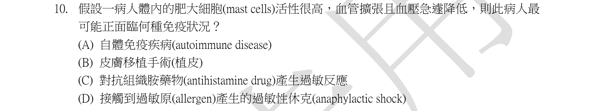
本地原卷PDF3 · 同年原答案PDF1（封存轉存本） · 已核對同年轉存生物釋疑PDF6–7（未列本題）
官方採計／來源：D 原答案：D
未列本輪取得同年公告的生物Q4、5、16；依原表，不宣稱不存在其他未取得公告
主分類：Ch43 The Immune System
43.4 / Exaggerated, Self-Directed, and Diminished Immune Responses
目錄行2924；條目起始印刷頁970；實際目錄 PDF47
主分類理由：43.4 / Exaggerated, Self-Directed, and Diminished Immune Responses：急性全身過敏是免疫過度反應的明確子例。
次分類理由：無另列最小次條目；可以，但原C指定抗組織胺過敏而題幹沒有藥物線索；D直接為全身過敏性休克，免疫過度反應最貼近。
科學說明：原表D。IgE介導肥大細胞釋放組織胺等可造成全身血管擴張、通透性增加及低血壓，符合過敏性休克。藥物過敏也可引發此反應，但選項D直接命名題示系統性症候，不據題目作個人診斷。
來源涵蓋範圍：依本地教材實際最小目錄與列示正文判斷；原題限定與來源差異另列，正文小標不冒充目錄。
教材正文：印刷970／PDF1019、印刷971／PDF1020
補充來源：本題未另列課本外來源
另行比較：C藥物過敏是否也可能全身反應？
可以，但原C指定抗組織胺過敏而題幹沒有藥物線索；D直接為全身過敏性休克，免疫過度反應最貼近。
結論：證據確認，分類疑義已解決。完整覆核紀錄
Q11 · 23.2 / The Hardy-Weinberg Equation 正式分類
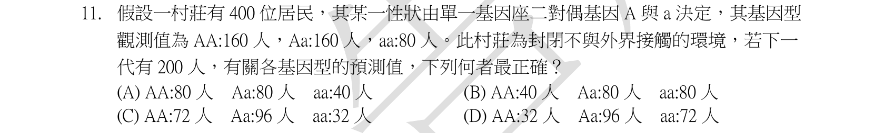
本地原卷PDF3 · 同年原答案PDF1（封存轉存本） · 已核對同年轉存生物釋疑PDF6–7（未列本題）
官方採計／來源：C 原答案：C
未列本輪取得同年公告的生物Q4、5、16；依原表，不宣稱不存在其他未取得公告
主分類：Ch23 The Evolution of Populations
23.2 / The Hardy-Weinberg Equation
目錄行1445；條目起始印刷頁490；實際目錄 PDF41
主分類理由：23.2 / The Hardy-Weinberg Equation：由基因型計等位頻率再作隨機交配預測是HW方程核心。
次分類理由：無另列最小次條目；重算p=.6得到72／96／32，並指出封閉不足HW；主目方程不靠答案字母決定。
科學說明：原表C。p=(2×160+160)/(2×400)=0.6，q=0.4；下一代200個體的期望AA=72、Aa=96、aa=32。僅稱封閉族群不足以保證隨機交配及其他HW條件，答案依題目的理想模型解讀；原「二對偶基因」用語保留，不改成另一道題。
來源涵蓋範圍：依本地教材實際最小目錄與列示正文判斷；原題限定與來源差異另列，正文小標不冒充目錄。
教材正文：印刷489／PDF538、印刷490／PDF539、印刷491／PDF540、印刷492／PDF541、印刷493／PDF542
補充來源：本題未另列課本外來源
另行比較：是否將第一代160／160／80直接減半？
重算p=.6得到72／96／32，並指出封閉不足HW；主目方程不靠答案字母決定。
結論：證據確認，分類疑義已解決。完整覆核紀錄
Q12 · 23.3 / Gene Flow 正式分類
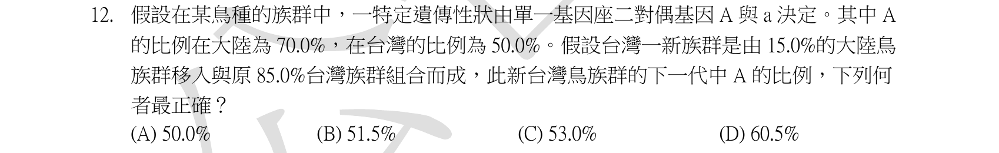
本地原卷PDF3 · 同年原答案PDF1（封存轉存本） · 已核對同年轉存生物釋疑PDF6–7（未列本題）
官方採計／來源：C 原答案：C
未列本輪取得同年公告的生物Q4、5、16；依原表，不宣稱不存在其他未取得公告
主分類：Ch23 The Evolution of Populations
23.3 / Gene Flow
目錄行1458；條目起始印刷頁496；實際目錄 PDF41
主分類理由：23.3 / Gene Flow：遷入個體改變族群等位頻率是基因流。
次分類理由：無另列最小次條目；原圖明确15%加85%，加權頻率53%確認；不是51.5%，主基因流。
科學說明：原表C。遷入者占混合後15%，新頻率=0.15×0.70+0.85×0.50=0.53。假設兩群对後代基因庫的相對貢獻按題示比例且沒有其他作用力，不把族群15%誤當原族群數的15%。
來源涵蓋範圍：依本地教材實際最小目錄與列示正文判斷；原題限定與來源差異另列，正文小標不冒充目錄。
教材正文：印刷496／PDF545、印刷497／PDF546
補充來源：本題未另列課本外來源
另行比較：15%以原數量為基準還是混合後比例？
原圖明确15%加85%，加權頻率53%確認；不是51.5%，主基因流。
結論：證據確認，分類疑義已解決。完整覆核紀錄
Q13 · 27.6 / Pathogenic Bacteria 正式分類
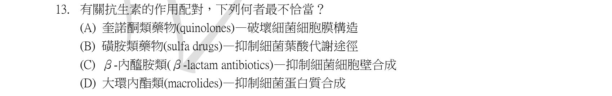
本地原卷PDF3 · 同年原答案PDF1（封存轉存本） · 已核對同年轉存生物釋疑PDF6–7（未列本題）
官方採計／來源：A 原答案：A
未列本輪取得同年公告的生物Q4、5、16；依原表，不宣稱不存在其他未取得公告
主分類：Ch27 Bacteria and Archaea
27.6 / Pathogenic Bacteria
目錄行1774；條目起始印刷頁588；實際目錄 PDF42
次分類：Ch27 Bacteria and Archaea
27.1 / Cell-Surface Structures
目錄行1709；條目起始印刷頁574；實際目錄 PDF42
主分類理由：27.6 / Pathogenic Bacteria：辨別抗生素打擊病原菌的靶點最直接屬致病細菌與控制。
次分類理由：27.1 / Cell-Surface Structures：細胞壁與膜的差異用於判別β-lactam及quinolone機制。
科學說明：原表A。Quinolones抑制DNA gyrase／topoisomerase IV等，並非破壞細胞膜；sulfonamides阻葉酸路徑，β-lactams阻細胞壁合成，macrolides作用於細菌核糖體。本地章節未列全部藥物機制，具體靶點另有具名補充。
來源涵蓋範圍：教材原理加具名補充；實讀段、時代與物種限制及下載失敗分存，不宣稱教材直接涵蓋全部專名。
教材正文：印刷574／PDF623、印刷575／PDF624、印刷588／PDF637、印刷589／PDF638
補充來源：S13
另行比較：quinolones是否為細胞膜作用藥？
原A錯靶點，具名微生物教材補gyrase；原卷四藥類全部核對，主致病菌次細胞表面。
結論：證據確認，分類疑義已解決。完整覆核紀錄
Q14 · 43.4 / Evolutionary Adaptations of Pathogens That Underlie Immune System Avoidance 正式分類
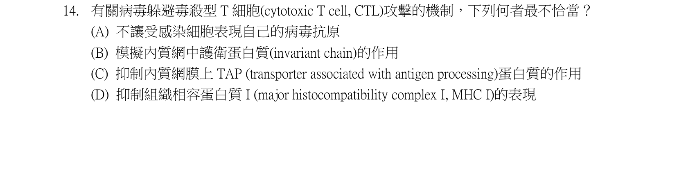
本地原卷PDF3 · 同年原答案PDF1（封存轉存本） · 已核對同年轉存生物釋疑PDF6–7（未列本題）
官方採計／來源：B 原答案：B
未列本輪取得同年公告的生物Q4、5、16；依原表，不宣稱不存在其他未取得公告
主分類：Ch43 The Immune System
43.4 / Evolutionary Adaptations of Pathogens That Underlie Immune System Avoidance
目錄行2927；條目起始印刷頁971；實際目錄 PDF47
次分類：Ch43 The Immune System
43.2 / Antigen Recognition by T Cells
目錄行2886；條目起始印刷頁959；實際目錄 PDF47
次分類：Ch43 The Immune System
43.3 / Cytotoxic T Cells: A Response to Infected Host Cells
目錄行2902；條目起始印刷頁966；實際目錄 PDF47
主分類理由：43.4 / Evolutionary Adaptations of Pathogens That Underlie Immune System Avoidance：病毒逃避CTL攻擊的策略是病原體免疫逃避。
次分類理由：43.2 / Antigen Recognition by T Cells：MHC及肽呈現的分子辨識基礎；43.3 / Cytotoxic T Cells: A Response to Infected Host Cells：CTL以MHC I辨識感染細胞的效應機制。
科學說明：原表B。Invariant chain參與MHC II路線，並非CTL辨識的MHC I專用機制。TAP把細胞質肽送進ER裝載MHC I；病毒可阻TAP或減少MHC I表面呈現。
來源涵蓋範圍：教材原理加具名補充；實讀段、時代與物種限制及下載失敗分存，不宣稱教材直接涵蓋全部專名。
教材正文：印刷959／PDF1008、印刷960／PDF1009、印刷966／PDF1015、印刷967／PDF1016、印刷971／PDF1020、印刷972／PDF1021、印刷973／PDF1022
補充來源：S14
另行比較：Invariant chain和TAP是否同一路線？
前者MHC II，後者MHC I肽呈現；删除首稿與原選項無關的caspase延伸，三個最小目保留。
結論：證據確認，分類疑義已解決。完整覆核紀錄
Q15 · 17.1 / The Genetic Code 正式分類
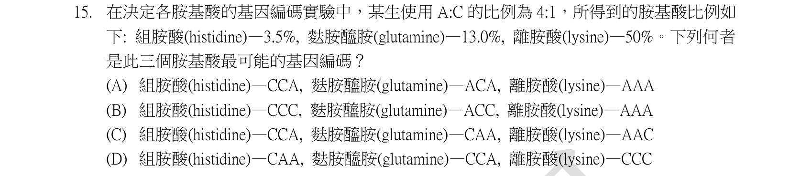
本地原卷PDF4 · 同年原答案PDF1（封存轉存本） · 已核對同年轉存生物釋疑PDF6–7（未列本題）
官方採計／來源：A 原答案：A
未列本輪取得同年公告的生物Q4、5、16；依原表，不宣稱不存在其他未取得公告
主分類：Ch17 Gene Expression: From Gene to Protein
17.1 / The Genetic Code
目錄行1042；條目起始印刷頁340；實際目錄 PDF39
次分類：Ch14 Mendel and the Gene Idea
14.2 / The Multiplication and Addition Rules Applied to Monohybrid Crosses
目錄行882；條目起始印刷頁277；實際目錄 PDF38
主分類理由：17.1 / The Genetic Code：隨機RNA組成用於密碼子推論，核心是遺傳密碼的破解。
次分類理由：14.2 / The Multiplication and Addition Rules Applied to Monohybrid Crosses：將獨立事件乘法規則移用至三個核苷酸位置的機率。
科學說明：原表A。按p(A)=0.8、p(C)=0.2，兩C一A的每一排列0.032，兩A一C的每一排列0.128；只能判組成，不能僅由頻率確定次序。原A列CCA與ACA，真實標準碼分別為Pro及Thr，並非題示His與Gln；His為CAU/CAC、Gln為CAA/CAG。本地p341密碼表與題設模型差異完整保留，未把原選項改成科學正確序列。
來源涵蓋範圍：依本地教材實際最小目錄與列示正文判斷；原題限定與來源差異另列，正文小標不冒充目錄。
教材正文：印刷277／PDF326、印刷340／PDF389、印刷341／PDF390、印刷342／PDF391
補充來源：本題未另列課本外來源
另行比較：比例可否決定CCA／ACA的核苷酸次序？
不可。按題設機率與真實碼表分別計算，A吻合組成頻率但兩個名稱不合標準碼，未改題／改答案。
結論：證據確認，分類疑義已解決。完整覆核紀錄
Q16 · 17.5 / Using CRISPR to Edit Genes and Correct Disease-Causing Mutations 正式分類
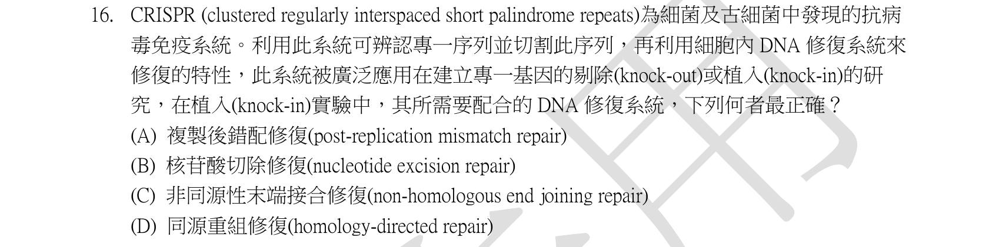
本地原卷PDF4 · 同年原答案PDF1（封存轉存本） · 同年釋疑轉存PDF7
官方採計／來源：來源衝突：原表D／釋疑文A；最終採計未確認 原答案：D
正文稱A；理由HDR對應原題D；結果欄維持原答案，來源矛盾未推定最終採計
主分類：Ch17 Gene Expression: From Gene to Protein
17.5 / Using CRISPR to Edit Genes and Correct Disease-Causing Mutations
目錄行1091；條目起始印刷頁360；實際目錄 PDF39
次分類：Ch16 The Molecular Basis of Inheritance
16.2 / Proofreading and Repairing DNA
目錄行1013；條目起始印刷頁327；實際目錄 PDF39
主分類理由：17.5 / Using CRISPR to Edit Genes and Correct Disease-Causing Mutations：指定位置插入基因涉及CRISPR後同源修復的編輯設計。
次分類理由：16.2 / Proofreading and Repairing DNA：DNA損傷修復原理支援HDR與NHEJ的區別。
科學說明：原答案表D，D為HDR；同年釋疑理由也說HDR，卻在結尾寫A且結果欄維持原答案。現有來源無法確認最終採計，保留衝突且final_scoring為null。具有同源臂的模板定向插入符合HDR，足以確定分類；NHEJ也能在特定設計下用於插入，不宣稱所有knock-in只能HDR。
來源涵蓋範圍：依本地教材實際最小目錄與列示正文判斷；原題限定與來源差異另列，正文小標不冒充目錄。
教材正文：印刷327／PDF376、印刷328／PDF377、印刷360／PDF409、印刷361／PDF410
補充來源：本題未另列課本外來源
另行比較：能否把釋疑A當成確定改答，或推定只是筆誤？
不可。原表D、原題D為HDR、釋疑理由HDR及末句A／維持原答案均保存，final_scoring=null；編輯修復分類已有充分依據。
結論：證據確認，分類疑義已解決。完整覆核紀錄
Q17 · 12.3 / The Cell Cycle Control System 正式分類
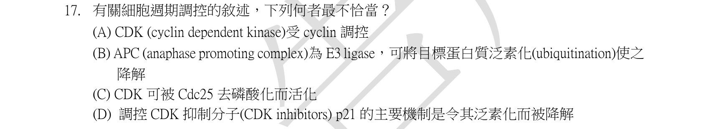
本地原卷PDF4 · 同年原答案PDF1（封存轉存本） · 已核對同年轉存生物釋疑PDF6–7（未列本題）
官方採計／來源：D 原答案：D
未列本輪取得同年公告的生物Q4、5、16；依原表，不宣稱不存在其他未取得公告
主分類：Ch12 The Cell Cycle
12.3 / The Cell Cycle Control System
目錄行789；條目起始印刷頁244；實際目錄 PDF38
次分類：Ch12 The Cell Cycle
12.3 / Loss of Cell Cycle Controls in Cancer Cells
目錄行792；條目起始印刷頁248；實際目錄 PDF38
主分類理由：12.3 / The Cell Cycle Control System：CDK、cyclin及抑制蛋白的周轉共同控制細胞週期。
次分類理由：12.3 / Loss of Cell Cycle Controls in Cancer Cells：p53及p21連結DNA損傷與癌細胞週期控制喪失。
科學說明：原表D。APC/C為E3 ligase；CDK需cyclin且Cdc25可去除抑制性磷酸。p21有p53誘導的轉錄控制，也有泛素依賴與非依賴的蛋白降解。原D說「主要機制」，不是「唯一機制」；僅證明另有路徑不足以排除某情境以泛素降解為主，重要性依細胞與條件而異。同年沒有取得Q17釋疑，不替命題者補造唯一理由。官方D留存，分類是細胞週期多層調控。
來源涵蓋範圍：教材原理加具名補充；實讀段、時代與物種限制及下載失敗分存，不宣稱教材直接涵蓋全部專名。
教材正文：印刷244／PDF293、印刷245／PDF294、印刷246／PDF295、印刷247／PDF296、印刷248／PDF297、印刷249／PDF298、印刷373／PDF422、印刷374／PDF423
補充來源：S17
另行比較：D是否真的寫「唯一」或「專一」泛素化？
原圖實為「主要」。修正首稿過強轉述，加入控制途徑重要性依條件而定；保留原D及沒有該題釋疑的範圍，週期控制分類明確。
結論：證據確認，分類疑義已解決。完整覆核紀錄
Q18 · 6.4 / The Golgi Apparatus: Shipping and Receiving Center 正式分類
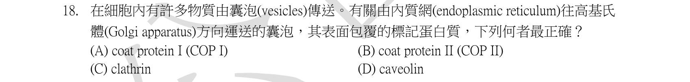
本地原卷PDF4 · 同年原答案PDF1（封存轉存本） · 已核對同年轉存生物釋疑PDF6–7（未列本題）
官方採計／來源：B 原答案：B
未列本輪取得同年公告的生物Q4、5、16；依原表，不宣稱不存在其他未取得公告
主分類：Ch06 A Tour of the Cell
6.4 / The Golgi Apparatus: Shipping and Receiving Center
目錄行346；條目起始印刷頁105；實際目錄 PDF36
次分類：Ch06 A Tour of the Cell
6.4 / The Endoplasmic Reticulum: Biosynthetic Factory
目錄行343；條目起始印刷頁104；實際目錄 PDF36
主分類理由：6.4 / The Golgi Apparatus: Shipping and Receiving Center：ER至Golgi的運輸是高基氏體接收端的囊泡運輸。
次分類理由：6.4 / The Endoplasmic Reticulum: Biosynthetic Factory：ER是分泌蛋白起始加工與COPII出芽來源。
科學說明：原表B。COPII負責ER出芽往Golgi；COPI主要從Golgi或中間腔室回收，clathrin用於內吞及轉高基網等，caveolin不屬本題正向分泌包被。
來源涵蓋範圍：教材原理加具名補充；實讀段、時代與物種限制及下載失敗分存，不宣稱教材直接涵蓋全部專名。
教材正文：印刷103／PDF152、印刷104／PDF153、印刷105／PDF154、印刷106／PDF155
補充來源：S18
另行比較：COPI正向還是COPII正向？
重看ER往Golgi方向，核Cooper COPII出芽與COPI回收；同章兩個最小目都保留。
結論：證據確認，分類疑義已解決。完整覆核紀錄
Q19 · 5.4 / Protein Structure and Function 正式分類
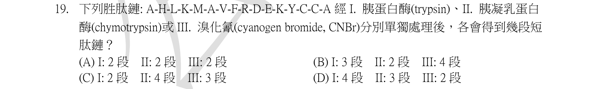
本地原卷PDF4 · 同年原答案PDF1（封存轉存本） · 已核對同年轉存生物釋疑PDF6–7（未列本題）
官方採計／來源：D 原答案：D
未列本輪取得同年公告的生物Q4、5、16；依原表，不宣稱不存在其他未取得公告
主分類：Ch05 The Structure and Function of Large Biological Molecules
5.4 / Protein Structure and Function
目錄行268；條目起始印刷頁78；實際目錄 PDF36
次分類：Ch41 Animal Nutrition
41.3 / Digestion in the Small Intestine
目錄行2714；條目起始印刷頁908；實際目錄 PDF46
主分類理由：5.4 / Protein Structure and Function：蛋白質一級序列與肽鍵切斷位置決定片段數。
次分類理由：41.3 / Digestion in the Small Intestine：trypsin與chymotrypsin在小腸蛋白消化中的專一性提供生理背景。
科學說明：原表D。依原序列的K4、R9、K12作trypsin切點得4段；高專一性chymotrypsin切F8、Y13得3段；CNBr切M5得2段。計算採完全且理想專一切割；低專一性chymotrypsin還可能切L或M，原题未明示實驗條件，結果不是一概適用的實測預測。
來源涵蓋範圍：教材原理加具名補充；實讀段、時代與物種限制及下載失敗分存，不宣稱教材直接涵蓋全部專名。
教材正文：印刷78／PDF127、印刷79／PDF128、印刷80／PDF129、印刷908／PDF957、印刷909／PDF958
補充來源：S19
另行比較：是否漏K12、終點切斷或低專一性L位點？
從16殘基原圖重新編號，理想高專一性4／3／2；列出真實酵素条件限制而不冒充實驗結果。
結論：證據確認，分類疑義已解決。完整覆核紀錄
Q20 · 7.1 / The Fluidity of Membranes 正式分類
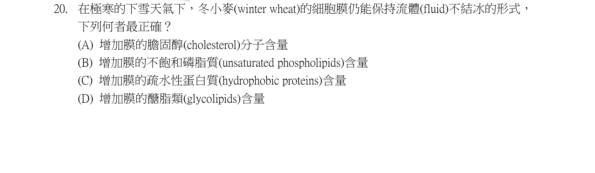
本地原卷PDF4 · 同年原答案PDF1（封存轉存本） · 已核對同年轉存生物釋疑PDF6–7（未列本題）
官方採計／來源：B 原答案：B
未列本輪取得同年公告的生物Q4、5、16；依原表，不宣稱不存在其他未取得公告
主分類：Ch07 Membrane Structure and Function
7.1 / The Fluidity of Membranes
目錄行411；條目起始印刷頁128；實際目錄 PDF36
主分類理由：7.1 / The Fluidity of Membranes：脂肪酸尾部不飽和程度影響低溫膜流動性。
次分類理由：無另列最小次條目；原例冬小麥，B不飽和磷脂最直接；膜流動性與細胞水結冰不是同一命題。
科學說明：原表B。順式不飽和尾的彎折阻礙緊密堆積，低溫時可維持較高膜流動性；這不是保證整個細胞不會結冰。
來源涵蓋範圍：依本地教材實際最小目錄與列示正文判斷；原題限定與來源差異另列，正文小標不冒充目錄。
教材正文：印刷128／PDF177、印刷129／PDF178
補充來源：本題未另列課本外來源
另行比較：是否可套動物cholesterol低溫調節？
原例冬小麥，B不飽和磷脂最直接；膜流動性與細胞水結冰不是同一命題。
結論：證據確認，分類疑義已解決。完整覆核紀錄
Q21 · 47.3 / Fate Mapping 正式分類
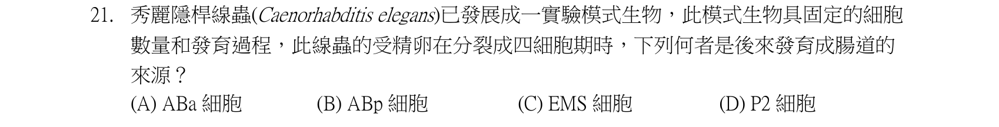
本地原卷PDF5 · 同年原答案PDF1（封存轉存本） · 已核對同年轉存生物釋疑PDF6–7（未列本題）
官方採計／來源：C 原答案：C
未列本輪取得同年公告的生物Q4、5、16；依原表，不宣稱不存在其他未取得公告
主分類：Ch47 Animal Development
47.3 / Fate Mapping
目錄行3160；條目起始印刷頁1058；實際目錄 PDF48
次分類：Ch47 Animal Development
47.3 / Cell Fate Determination and Pattern Formation by Inductive Signals
目錄行3169；條目起始印刷頁1061；實際目錄 PDF48
主分類理由：47.3 / Fate Mapping：辨認四細胞期哪一細胞產生腸道，是細胞譜系追蹤。
次分類理由：47.3 / Cell Fate Determination and Pattern Formation by Inductive Signals：P2對EMS誘導與譜系來源的區別是容易混淆的次要機制。
科學說明：原表C。四細胞為ABa、ABp、EMS、P2；EMS後分MS與E，E為腸道祖細胞。P2可提供誘導訊號，但不等於P2的後代就是腸道。
來源涵蓋範圍：教材原理加具名補充；實讀段、時代與物種限制及下載失敗分存，不宣稱教材直接涵蓋全部專名。
教材正文：印刷1058／PDF1107、印刷1059／PDF1108、印刷1061／PDF1110、印刷1062／PDF1111、印刷1063／PDF1112
補充來源：S21
另行比較：P2提供訊號是否表示腸道來自P2？
EMS→E為後代來源，P2是誘導者；主Fate Mapping與次誘導訊號角色分清。
結論：證據確認，分類疑義已解決。完整覆核紀錄
Q22 · 29.2 / Bryophyte Gametophytes 正式分類
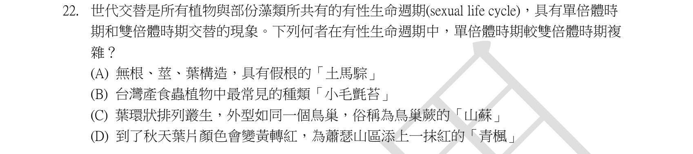
本地原卷PDF5 · 同年原答案PDF1（封存轉存本） · 已核對同年轉存生物釋疑PDF6–7（未列本題）
官方採計／來源：A 原答案：A
未列本輪取得同年公告的生物Q4、5、16；依原表，不宣稱不存在其他未取得公告
主分類：Ch29 Plant Diversity I: How Plants Colonized Land
29.2 / Bryophyte Gametophytes
目錄行1877；條目起始印刷頁624；實際目錄 PDF43
次分類：Ch29 Plant Diversity I: How Plants Colonized Land
29.2 / Bryophyte Sporophytes
目錄行1880；條目起始印刷頁625；實際目錄 PDF43
次分類：Ch29 Plant Diversity I: How Plants Colonized Land
29.3 / Origins and Traits of Vascular Plants
目錄行1890；條目起始印刷頁629；實際目錄 PDF43
主分類理由：29.2 / Bryophyte Gametophytes：蘚類以具獨立生活能力的配子體占優勢。
次分類理由：29.2 / Bryophyte Sporophytes：附著營養依賴的蘚類孢子體作對照；29.3 / Origins and Traits of Vascular Plants：維管植物孢子體優勢與真正維管組織用於排除其餘植物。
科學說明：原表A，土馬騣為蘚類，肉眼主要植物體為配子體；其假根不是真正維管根。其餘所列維管植物主要植物體為孢子體，不把蘚類孢子體說成不存在。
來源涵蓋範圍：依本地教材實際最小目錄與列示正文判斷；原題限定與來源差異另列，正文小標不冒充目錄。
教材正文：印刷621／PDF670、印刷622／PDF671、印刷623／PDF672、印刷624／PDF673、印刷625／PDF674、印刷626／PDF675、印刷629／PDF678、印刷630／PDF679
補充來源：本題未另列課本外來源
另行比較：是否只是一般減數分裂而非蘚類優勢世代？
原A土馬騌與其餘植物全部核對，主Bryophyte Gametophytes；蘚類孢子體及維管植物同章次目保留。
結論：證據確認，分類疑義已解決。完整覆核紀錄
Q23 · 39.2 / A Survey of Plant Hormones 正式分類
本地原卷PDF5 · 同年原答案PDF1（封存轉存本） · 已核對同年轉存生物釋疑PDF6–7（未列本題）
官方採計／來源：B 原答案：B
未列本輪取得同年公告的生物Q4、5、16；依原表，不宣稱不存在其他未取得公告
主分類：Ch39 Plant Responses to Internal and External Signals
39.2 / A Survey of Plant Hormones
目錄行2557；條目起始印刷頁847；實際目錄 PDF45
主分類理由：39.2 / A Survey of Plant Hormones：比較四種植物激素對莖部伸長的作用。
次分類理由：無另列最小次條目；不能。正文有激素小標，但本地實際目錄只有A Survey of Plant Hormones，採真實最小目。
科學說明：原表B，gibberellin促莖伸長。真實目錄最細是A Survey of Plant Hormones，赤黴素只是正文內小標，不新造目錄條目。其他激素也可參與生長，不能將選項間作用描述成毫不重疊。
來源涵蓋範圍：依本地教材實際最小目錄與列示正文判斷；原題限定與來源差異另列，正文小標不冒充目錄。
教材正文：印刷847／PDF896、印刷848／PDF897、印刷849／PDF898、印刷850／PDF899、印刷851／PDF900、印刷852／PDF901、印刷853／PDF902、印刷854／PDF903
補充來源：本題未另列課本外來源
另行比較：能否造Gibberellins為目錄最小條目？
不能。正文有激素小標，但本地實際目錄只有A Survey of Plant Hormones，採真實最小目。
結論：證據確認，分類疑義已解決。完整覆核紀錄
Q24 · 10.3 / Photosynthetic Pigments: The Light Receptors 正式分類
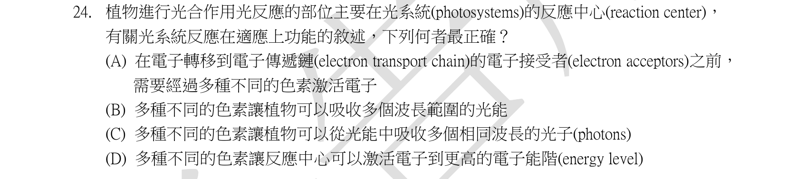
本地原卷PDF5 · 同年原答案PDF1（封存轉存本） · 已核對同年轉存生物釋疑PDF6–7（未列本題）
官方採計／來源：B 原答案：B
未列本輪取得同年公告的生物Q4、5、16；依原表，不宣稱不存在其他未取得公告
主分類：Ch10 Photosynthesis
10.3 / Photosynthetic Pigments: The Light Receptors
目錄行647；條目起始印刷頁192；實際目錄 PDF37
次分類：Ch10 Photosynthesis
10.3 / A Photosystem: A Reaction-Center Complex Associated with Light-Harvesting Complexes
目錄行653；條目起始印刷頁195；實際目錄 PDF37
主分類理由：10.3 / Photosynthetic Pigments: The Light Receptors：多種色素吸收不同波長的光提高可用光譜範圍。
次分類理由：10.3 / A Photosystem: A Reaction-Center Complex Associated with Light-Harvesting Complexes：天線色素向反應中心傳遞激發能，解釋不同色素如何協作。
科學說明：原表B。Chlorophyll a/b及carotenoids吸收光譜不同，可提高不同波長光的利用；能量在天線複合體轉移，不是把數個顏色合成一個更高能量的光子。
來源涵蓋範圍：依本地教材實際最小目錄與列示正文判斷；原題限定與來源差異另列，正文小標不冒充目錄。
教材正文：印刷192／PDF241、印刷193／PDF242、印刷194／PDF243、印刷195／PDF244
補充來源：本題未另列課本外來源
Q25 · 29.3 / Origins and Traits of Vascular Plants 正式分類
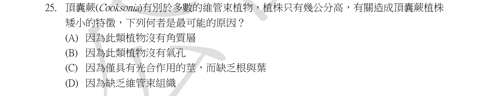
本地原卷PDF5 · 同年原答案PDF1（封存轉存本） · 已核對同年轉存生物釋疑PDF6–7（未列本題）
官方採計／來源：C 原答案：C
未列本輪取得同年公告的生物Q4、5、16；依原表，不宣稱不存在其他未取得公告
主分類：Ch29 Plant Diversity I: How Plants Colonized Land
29.3 / Origins and Traits of Vascular Plants
目錄行1890；條目起始印刷頁629；實際目錄 PDF43
次分類：Ch29 Plant Diversity I: How Plants Colonized Land
29.1 / Derived Traits of Plants
目錄行1867；條目起始印刷頁621；實際目錄 PDF43
主分類理由：29.3 / Origins and Traits of Vascular Plants：早期維管植物Cooksonia的構造與演化特徵。
次分類理由：29.1 / Derived Traits of Plants：早期陸生植物的適應與缺乏現代根葉的形態背景。
科學說明：原表C。Cooksonia為小型、分枝軸狀的早期陸生植物化石，缺乏現代式根與葉，軸可行光合作用。不同化石種維管證據有差別，不以此名字概括所有標本構造或把體型大小說成單因決定。
來源涵蓋範圍：依本地教材實際最小目錄與列示正文判斷；原題限定與來源差異另列，正文小標不冒充目錄。
教材正文：印刷621／PDF670、印刷622／PDF671、印刷629／PDF678、印刷630／PDF679、印刷631／PDF680
補充來源：本題未另列課本外來源
另行比較：是否因完全沒有維管組織而矮小？
原圖C為有光合莖而無根葉，p622與629有早期植物證據；不把所有Cooksonia種的維管差異抹除。
結論：證據確認，分類疑義已解決。完整覆核紀錄
Q26 · 39.4 / Mechanical Stimuli 正式分類
本地原卷PDF5 · 同年原答案PDF1（封存轉存本） · 已核對同年轉存生物釋疑PDF6–7（未列本題）
官方採計／來源：B 原答案：B
未列本輪取得同年公告的生物Q4、5、16；依原表，不宣稱不存在其他未取得公告
主分類：Ch39 Plant Responses to Internal and External Signals
39.4 / Mechanical Stimuli
目錄行2586；條目起始印刷頁861；實際目錄 PDF45
主分類理由：39.4 / Mechanical Stimuli：含羞草受機械刺激的快速反應是觸覺刺激子目。
次分類理由：無另列最小次條目；原問膨大構造，B葉枕正確；機械刺激正文直接涵蓋pulvini，未只寫泛稱葉柄。
科學說明：原表B。葉枕運動細胞離子移動伴隨水分變化，改變膨壓而閉合葉片；是快速可逆運動，不靠細胞生長或動物肌肉收縮。
來源涵蓋範圍：依本地教材實際最小目錄與列示正文判斷；原題限定與來源差異另列，正文小標不冒充目錄。
教材正文：印刷861／PDF910、印刷862／PDF911
補充來源：本題未另列課本外來源
另行比較：題目實際問機制還是特殊結構名稱？
原問膨大構造，B葉枕正確；機械刺激正文直接涵蓋pulvini，未只寫泛稱葉柄。
結論：證據確認，分類疑義已解決。完整覆核紀錄
Q27 · 56.3 / Landscape Structure and Biodiversity 正式分類
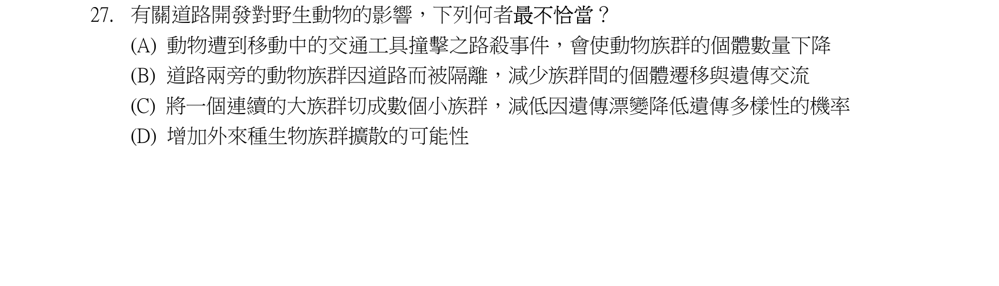
本地原卷PDF5 · 同年原答案PDF1（封存轉存本） · 已核對同年轉存生物釋疑PDF6–7（未列本題）
官方採計／來源：C 原答案：C
未列本輪取得同年公告的生物Q4、5、16；依原表，不宣稱不存在其他未取得公告
主分類：Ch56 Conservation Biology and Global Change
56.3 / Landscape Structure and Biodiversity
目錄行3768；條目起始印刷頁1270；實際目錄 PDF50
次分類：Ch23 The Evolution of Populations
23.3 / Genetic Drift
目錄行1455；條目起始印刷頁494；實際目錄 PDF41
次分類：Ch56 Conservation Biology and Global Change
56.1 / Threats to Biodiversity
目錄行3745；條目起始印刷頁1263；實際目錄 PDF50
主分類理由：56.3 / Landscape Structure and Biodiversity：道路切割棲地使連通性與族群規模改變。
次分類理由：23.3 / Genetic Drift：小族群抽樣誤差增強造成漂變；56.1 / Threats to Biodiversity：棲地破壞與道路致死構成保育威脅。
科學說明：原表C。破碎化可縮小有效族群而增加遺傳漂變、阻礙基因流；道路也造成路殺與邊緣改變。族群「變小」不保證每一性狀都立即降低，但長期隨機遺傳損失風險增加。
來源涵蓋範圍：依本地教材實際最小目錄與列示正文判斷；原題限定與來源差異另列，正文小標不冒充目錄。
教材正文：印刷494／PDF543、印刷495／PDF544、印刷496／PDF545、印刷1263／PDF1312、印刷1264／PDF1313、印刷1265／PDF1314、印刷1270／PDF1319、印刷1271／PDF1320
補充來源：本題未另列課本外來源
另行比較：小族群是否降低漂變遺傳流失風險？
原C把方向倒置；破碎化與遺傳漂變、威脅三條目分工，路殺／外來種擴散也保留。
結論：證據確認，分類疑義已解決。完整覆核紀錄
Q28 · 54.1 / Competition 正式分類
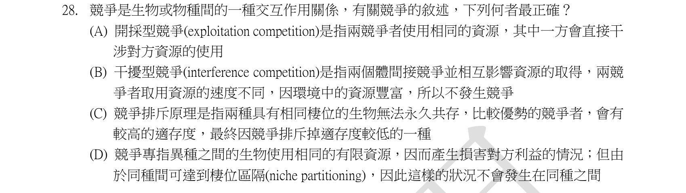
本地原卷PDF6 · 同年原答案PDF1（封存轉存本） · 已核對同年轉存生物釋疑PDF6–7（未列本題）
官方採計／來源：C 原答案：C
未列本輪取得同年公告的生物Q4、5、16；依原表，不宣稱不存在其他未取得公告
主分類：Ch54 Community Ecology
54.1 / Competition
目錄行3598；條目起始印刷頁1215；實際目錄 PDF50
次分類：Ch53 Population Ecology
53.5 / Mechanisms of Density-Dependent Population Regulation
目錄行3574；條目起始印刷頁1203；實際目錄 PDF49
主分類理由：54.1 / Competition：競爭排除與干擾／資源競爭屬群集種間競爭。
次分類理由：53.5 / Mechanisms of Density-Dependent Population Regulation：種內競爭同樣可依密度調節族群，避免把競爭限於異種。
科學說明：原表C。在穩定且資源受限的環境中，完全相同生態棲位難以長期共存。干擾競爭是直接阻擋，利用性競爭透過共同資源；兩者不能互換，也不是只有種間才競爭。
來源涵蓋範圍：依本地教材實際最小目錄與列示正文判斷；原題限定與來源差異另列，正文小標不冒充目錄。
教材正文：印刷1203／PDF1252、印刷1204／PDF1253、印刷1215／PDF1264、印刷1216／PDF1265、印刷1217／PDF1266
補充來源：本題未另列課本外來源
Q29 · 56.3 / Landscape Structure and Biodiversity 正式分類
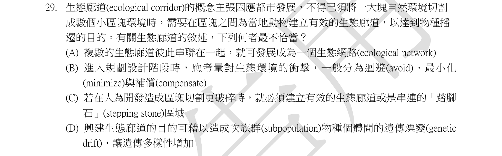
本地原卷PDF6 · 同年原答案PDF1（封存轉存本） · 已核對同年轉存生物釋疑PDF6–7（未列本題）
官方採計／來源：D 原答案：D
未列本輪取得同年公告的生物Q4、5、16；依原表，不宣稱不存在其他未取得公告
主分類：Ch56 Conservation Biology and Global Change
56.3 / Landscape Structure and Biodiversity
目錄行3768；條目起始印刷頁1270；實際目錄 PDF50
次分類：Ch23 The Evolution of Populations
23.3 / Gene Flow
目錄行1458；條目起始印刷頁496；實際目錄 PDF41
主分類理由：56.3 / Landscape Structure and Biodiversity：生態廊道連接破碎棲地的功能與限制。
次分類理由：23.3 / Gene Flow：廊道促進個體及等位基因跨族群移動。
科學說明：原表D。廊道可提高基因流與重新定殖機會，並不藉增加漂變來增加遺傳多樣性；也可能傳播病原、入侵者，利益依實際景觀及物種而定。
來源涵蓋範圍：依本地教材實際最小目錄與列示正文判斷；原題限定與來源差異另列，正文小標不冒充目錄。
教材正文：印刷496／PDF545、印刷497／PDF546、印刷1270／PDF1319、印刷1271／PDF1320
補充來源：本題未另列課本外來源
Q30 · 53.6 / Global Carrying Capacity 正式分類
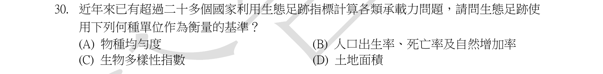
本地原卷PDF6 · 同年原答案PDF1（封存轉存本） · 已核對同年轉存生物釋疑PDF6–7（未列本題）
官方採計／來源：D 原答案：D
未列本輪取得同年公告的生物Q4、5、16；依原表，不宣稱不存在其他未取得公告
主分類：Ch53 Population Ecology
53.6 / Global Carrying Capacity
目錄行3587；條目起始印刷頁1209；實際目錄 PDF50
主分類理由：53.6 / Global Carrying Capacity：生態足跡是人類全球承載量評估所用的需求面積指標。
次分類理由：無另列最小次條目；原D土地面積，教材承載量內ecological footprint直接支持，目錄無獨立足跡子目。
科學說明：原表D。估算供應資源與吸收廢棄物所需的生物生產性土地與水域，以面積及標準化全球公頃表示；不是人口成長率或純污染濃度。
來源涵蓋範圍：依本地教材實際最小目錄與列示正文判斷；原題限定與來源差異另列，正文小標不冒充目錄。
教材正文：印刷1209／PDF1258、印刷1210／PDF1259、印刷1211／PDF1260
補充來源：本題未另列課本外來源
另行比較：生態足跡單位與多樣性指數可否混用？
原D土地面積，教材承載量內ecological footprint直接支持，目錄無獨立足跡子目。
結論：證據確認，分類疑義已解決。完整覆核紀錄
Q31 · 53.1 / Demographics 正式分類
本地原卷PDF6 · 同年原答案PDF1（封存轉存本） · 已核對同年轉存生物釋疑PDF6–7（未列本題）
官方採計／來源：C 原答案：C
未列本輪取得同年公告的生物Q4、5、16；依原表，不宣稱不存在其他未取得公告
主分類：Ch53 Population Ecology
53.1 / Demographics
目錄行3534；條目起始印刷頁1193；實際目錄 PDF49
次分類：Ch33 An Introduction to Invertebrates
33.4 / Arthropods
目錄行2133；條目起始印刷頁706；實際目錄 PDF44
主分類理由：53.1 / Demographics：週期性死亡風險呈現在存活曲線，是族群人口學。
次分類理由：33.4 / Arthropods：節肢動物必須蛻皮，提供螃蟹危險時段的機制。
科學說明：原表C。甲殼類蛻皮後硬殼未恢復時風險增加，可能形成階梯狀存活曲線。本地p1194直接用螃蟹說明此例；不是所有節肢動物都具有完全相同曲線。
來源涵蓋範圍：依本地教材實際最小目錄與列示正文判斷；原題限定與來源差異另列，正文小標不冒充目錄。
教材正文：印刷706／PDF755、印刷707／PDF756、印刷708／PDF757、印刷709／PDF758、印刷1193／PDF1242、印刷1194／PDF1243、印刷1195／PDF1244
補充來源：本題未另列課本外來源
另行比較：階梯是否一定源於季節或捕食者數量？
教材p1194明示crabs的molt，C生理週期最直接；存活曲線為主而非單列甲殼分類。
結論：證據確認，分類疑義已解決。完整覆核紀錄
Q32 · 56.1 / Threats to Biodiversity 正式分類
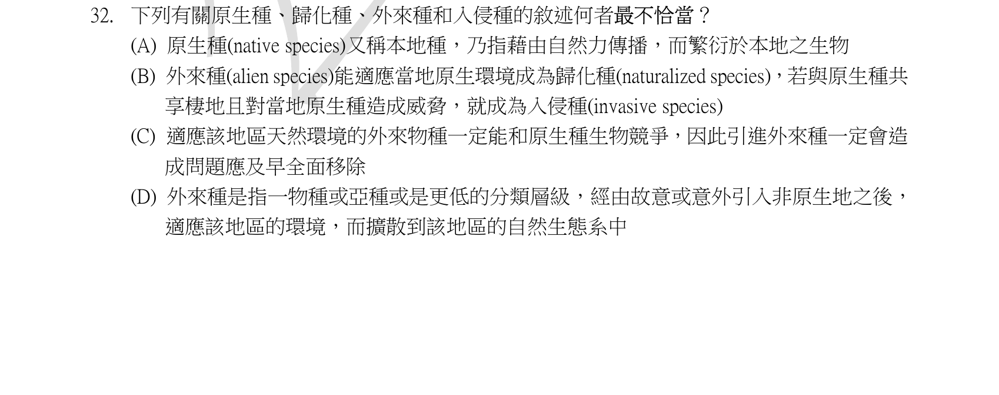
本地原卷PDF6 · 同年原答案PDF1（封存轉存本） · 已核對同年轉存生物釋疑PDF6–7（未列本題）
官方採計／來源：C 原答案：C
未列本輪取得同年公告的生物Q4、5、16；依原表，不宣稱不存在其他未取得公告
主分類：Ch56 Conservation Biology and Global Change
56.1 / Threats to Biodiversity
目錄行3745；條目起始印刷頁1263；實際目錄 PDF50
主分類理由：56.1 / Threats to Biodiversity：引入種／入侵種與生物多樣性威脅的辨析。
次分類理由：無另列最小次條目；原C的「一定」兩次皆過強；D定義加上適應擴散也有範圍限制，保存原文而分類仍保育威脅。
科學說明：原表C。外來種由人類活動跨出原生分布，只有部分建立、擴張並造成危害而成入侵問題；不等同所有外來種皆有害。原題其他選項若把已擴張作所有外來種的必要定義過窄，保留此用語限制。
來源涵蓋範圍：依本地教材實際最小目錄與列示正文判斷；原題限定與來源差異另列，正文小標不冒充目錄。
教材正文：印刷1263／PDF1312、印刷1264／PDF1313、印刷1265／PDF1314
補充來源：本題未另列課本外來源
另行比較：是否可把所有外來種改標有害入侵？
原C的「一定」兩次皆過強；D定義加上適應擴散也有範圍限制，保存原文而分類仍保育威脅。
結論：證據確認，分類疑義已解決。完整覆核紀錄
Q33 · 56.3 / Landscape Structure and Biodiversity 正式分類
本地原卷PDF7 · 同年原答案PDF1（封存轉存本） · 已核對同年轉存生物釋疑PDF6–7（未列本題）
官方採計／來源：A 原答案：A
未列本輪取得同年公告的生物Q4、5、16；依原表，不宣稱不存在其他未取得公告
主分類：Ch56 Conservation Biology and Global Change
56.3 / Landscape Structure and Biodiversity
目錄行3768；條目起始印刷頁1270；實際目錄 PDF50
主分類理由：56.3 / Landscape Structure and Biodiversity：棲地切割增加邊緣相對比例，直接對應景觀結構。
次分類理由：無另列最小次條目；原A邊緣效應直連邊緣／內部比例，題文最大問題不當普世排序；主景觀結構。
科學說明：原表A。面積縮小或被分割可提高邊緣對內部比例，造成光、風及物種組成差異。題稱邊緣效應最大的選項按其比較情境判斷，不宣稱每種物種或所有棲地的反應都相同。
來源涵蓋範圍：依本地教材實際最小目錄與列示正文判斷；原題限定與來源差異另列，正文小標不冒充目錄。
教材正文：印刷1270／PDF1319、印刷1271／PDF1320、印刷1272／PDF1321
補充來源：本題未另列課本外來源
另行比較：與缺廊道、過度開發、入侵哪個最直接對面積縮小？
原A邊緣效應直連邊緣／內部比例，題文最大問題不當普世排序；主景觀結構。
結論：證據確認，分類疑義已解決。完整覆核紀錄
Q34 · 22.2 / Key Features of Natural Selection 正式分類
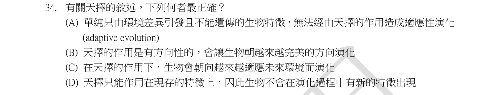
本地原卷PDF7 · 同年原答案PDF1（封存轉存本） · 已核對同年轉存生物釋疑PDF6–7（未列本題）
官方採計／來源：A 原答案：A
未列本輪取得同年公告的生物Q4、5、16；依原表，不宣稱不存在其他未取得公告
主分類：Ch22 Descent with Modification: A Darwinian View of Life
22.2 / Key Features of Natural Selection
目錄行1402；條目起始印刷頁476；實際目錄 PDF41
次分類：Ch23 The Evolution of Populations
23.4 / Why Natural Selection Cannot Fashion Perfect Organisms
目錄行1477；條目起始印刷頁501；實際目錄 PDF41
次分類：Ch14 Mendel and the Gene Idea
14.3 / Nature and Nurture: The Environmental Impact on Phenotype
目錄行898；條目起始印刷頁282；實際目錄 PDF38
主分類理由：22.2 / Key Features of Natural Selection：自然選擇需要可遺傳變異與差別繁殖成功。
次分類理由：23.4 / Why Natural Selection Cannot Fashion Perfect Organisms：選擇受歷史與權衡限制，無法預先設計完美個體；14.3 / Nature and Nurture: The Environmental Impact on Phenotype：環境造成的表現型變化未必可遺傳。
科學說明：原表A。單純後天取得而不可遺傳的變化不能當作跨代選擇累積的基礎。選擇不是為了未來需要而主動創造變異，突變可產生新變異，適應也受既有構造與權衡限制。
來源涵蓋範圍：依本地教材實際最小目錄與列示正文判斷；原題限定與來源差異另列，正文小標不冒充目錄。
教材正文：印刷282／PDF331、印刷283／PDF332、印刷476／PDF525、印刷477／PDF526、印刷478／PDF527、印刷501／PDF550、印刷502／PDF551
補充來源：本題未另列課本外來源
另行比較：天擇是否會規劃未來或產生完美個體？
A限定不可遺傳的環境差異，B/C目的論及D阻止新變異均不成立；三條目均有對應理由。
結論：證據確認，分類疑義已解決。完整覆核紀錄
Q35 · 54.1 / Positive Interactions 正式分類
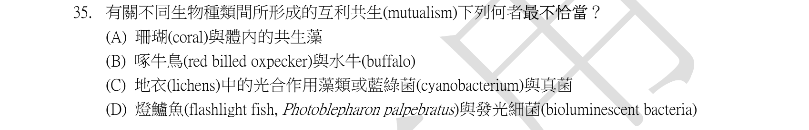
本地原卷PDF7 · 同年原答案PDF1（封存轉存本） · 已核對同年轉存生物釋疑PDF6–7（未列本題）
官方採計／來源：B 原答案：B
未列本輪取得同年公告的生物Q4、5、16；依原表，不宣稱不存在其他未取得公告
主分類：Ch54 Community Ecology
54.1 / Positive Interactions
目錄行3604；條目起始印刷頁1220；實際目錄 PDF50
次分類：Ch54 Community Ecology
54.1 / Exploitation
目錄行3601；條目起始印刷頁1217；實際目錄 PDF50
次分類：Ch31 Fungi
31.5 / Fungi as Mutualists
目錄行2021；條目起始印刷頁667；實際目錄 PDF43
次分類：Ch28 Protists
28.6 / Symbiotic Protists
目錄行1847；條目起始印刷頁614；實際目錄 PDF42
次分類：Ch27 Bacteria and Archaea
27.5 / Ecological Interactions
目錄行1764；條目起始印刷頁587；實際目錄 PDF42
主分類理由：54.1 / Positive Interactions：比較互利共生與其他種間關係，以正面互動為主軸。
次分類理由：54.1 / Exploitation：啄食宿主傷口可能具剝削性；31.5 / Fungi as Mutualists：地衣提供真菌互利例；28.6 / Symbiotic Protists：珊瑚與光合共生者提供原生生物例。；27.5 / Ecological Interactions：燈籠魚與發光細菌互利正是本地p587的具名例。
科學說明：原表B。原題僅寫水牛buffalo，未指定物種。啄牛鳥可吃蜱也可啄血，關係依宿主與環境而變；Weeks研究家牛且明示不可直接外推原生宿主，因此不能據此斷言題中水牛與啄牛鳥絕無互利。本地p1221牛背鷺又非啄牛鳥。珊瑚與藻、地衣菌藻、p587燈籠魚與發光細菌均有教材互利例。保留官方B與宿主、用語差異，分類明確為種間互動。
來源涵蓋範圍：教材原理加具名補充；實讀段、時代與物種限制及下載失敗分存，不宣稱教材直接涵蓋全部專名。
教材正文：印刷587／PDF636、印刷614／PDF663、印刷615／PDF664、印刷667／PDF716、印刷668／PDF717、印刷1217／PDF1266、印刷1218／PDF1267、印刷1220／PDF1269、印刷1221／PDF1270
補充來源：S35
另行比較：是否把牛背鷺、啄牛鳥、家牛和水牛混作同種互動？
原图僅buffalo未定種，修正首稿自行加非洲；家牛研究限制明示。另補原D燈籠魚在p587的直接教材與27.5次目。
結論：證據確認，分類疑義已解決。完整覆核紀錄
Q36 · 37.3 / Bacteria and Plant Nutrition 正式分類
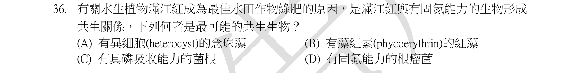
本地原卷PDF7 · 同年原答案PDF1（封存轉存本） · 已核對同年轉存生物釋疑PDF6–7（未列本題）
官方採計／來源：A 原答案：A
未列本輪取得同年公告的生物Q4、5、16；依原表，不宣稱不存在其他未取得公告
主分類：Ch37 Soil and Plant Nutrition
37.3 / Bacteria and Plant Nutrition
目錄行2463；條目起始印刷頁814；實際目錄 PDF45
次分類：Ch27 Bacteria and Archaea
27.3 / Metabolic Cooperation
目錄行1741；條目起始印刷頁582；實際目錄 PDF42
次分類：Ch27 Bacteria and Archaea
27.5 / Ecological Interactions
目錄行1764；條目起始印刷頁587；實際目錄 PDF42
主分類理由：37.3 / Bacteria and Plant Nutrition：植物與固氮細菌的營養共生，且本地p817直接說明滿江紅作水田肥源。
次分類理由：27.3 / Metabolic Cooperation：藍綠菌异形細胞與營養細胞分工提供固氮機制；27.5 / Ecological Interactions：植物與微生物互利屬生態互動。
科學說明：原表A，cyanobacteria。異形細胞提供保護nitrogenase的低氧環境；满江紅共生藍綠菌固定氮，植物提供碳源。本地p817直接列Azolla，文獻Anabaena／Nostoc azollae命名差異留存，不把所有固氮菌都說成必有異形細胞。
來源涵蓋範圍：教材原理加具名補充；實讀段、時代與物種限制及下載失敗分存，不宣稱教材直接涵蓋全部專名。
教材正文：印刷582／PDF631、印刷583／PDF632、印刷587／PDF636、印刷814／PDF863、印刷815／PDF864、印刷816／PDF865、印刷817／PDF866
補充來源：S36
另行比較：主目只放異形細胞是否漏掉水田綠肥主題？
原問滿江紅固氮共生，p817有完整具名農業例；主改37.3 Bacteria and Plant Nutrition，27.3代謝合作及27.5互動為次。
結論：證據確認，分類疑義已解決。完整覆核紀錄
Q37 · 44.1 / Osmoregulatory Challenges and Mechanisms 正式分類
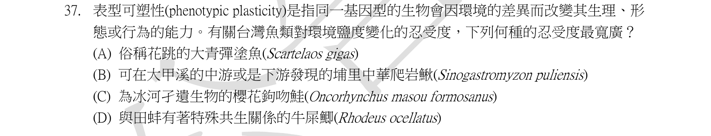
本地原卷PDF7 · 同年原答案PDF1（封存轉存本） · 已核對同年轉存生物釋疑PDF6–7（未列本題）
官方採計／來源：A 原答案：A
未列本輪取得同年公告的生物Q4、5、16；依原表，不宣稱不存在其他未取得公告
主分類：Ch44 Osmoregulation and Excretion
44.1 / Osmoregulatory Challenges and Mechanisms
目錄行2944；條目起始印刷頁978；實際目錄 PDF47
次分類：Ch14 Mendel and the Gene Idea
14.3 / Nature and Nurture: The Environmental Impact on Phenotype
目錄行898；條目起始印刷頁282；實際目錄 PDF38
主分類理由：44.1 / Osmoregulatory Challenges and Mechanisms：廣鹽與狹鹽動物面對不同滲透壓的調節挑戰。
次分類理由：14.3 / Nature and Nurture: The Environmental Impact on Phenotype：個體對環境鹽度的適應性變化涉及表現型可塑性。
科學說明：原表A。臺灣魚類資料庫列Scartelaos gigas為河口紅樹林半淡鹹水與海水魚，可支持相較題列淡水魚的廣鹽環境調節。這是棲地證據，不是耐鹽極限的實驗值；本地一般鮭魚洄游例不可直接當成櫻花鉤吻鮭亦洄游海洋。
來源涵蓋範圍：教材原理加具名補充；實讀段、時代與物種限制及下載失敗分存，不宣稱教材直接涵蓋全部專名。
教材正文：印刷282／PDF331、印刷283／PDF332、印刷978／PDF1027、印刷979／PDF1028、印刷980／PDF1029
補充來源：S37
另行比較：是不是問基因變異而非同基因型可塑性？
原題定义可塑性但要求耐鹽度比較，主滲透調節次環境表型；魚類資料庫的棲地支持範圍明示。
結論：證據確認，分類疑義已解決。完整覆核紀錄
Q38 · 30.2 / Gymnosperm Diversity 正式分類
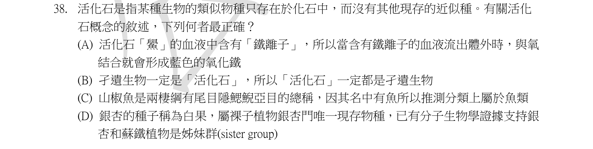
本地原卷PDF7 · 同年原答案PDF1（封存轉存本） · 已核對同年轉存生物釋疑PDF6–7（未列本題）
官方採計／來源：D 原答案：D
未列本輪取得同年公告的生物Q4、5、16；依原表，不宣稱不存在其他未取得公告
主分類：Ch30 Plant Diversity II: The Evolution of Seed Plants
30.2 / Gymnosperm Diversity
目錄行1932；條目起始印刷頁641；實際目錄 PDF43
次分類：Ch26 Phylogeny and the Tree of Life
26.3 / Cladistics
目錄行1659；條目起始印刷頁559；實際目錄 PDF42
主分類理由：30.2 / Gymnosperm Diversity：銀杏唯一現生種及與蘇鐵的關係屬裸子植物多樣性。
次分類理由：26.3 / Cladistics：姊妹群用共同祖先與分支關係界定。
科學說明：原表D。Ginkgo biloba是銀杏類唯一現生種；核及葉綠體研究支持與蘇鐵成姊妹群，但本地12e圖中仍示關係未定，2022研究粒線體結果也不同，差異明記。「活化石」非不再演化的正式分類；鱟為含銅血藍蛋白，原C所稱山椒魚仍是兩生類，不能因俗名有魚而歸魚類。
來源涵蓋範圍：教材原理加具名補充；實讀段、時代與物種限制及下載失敗分存，不宣稱教材直接涵蓋全部專名。
教材正文：印刷559／PDF608、印刷560／PDF609、印刷561／PDF610、印刷641／PDF690、印刷642／PDF691、印刷643／PDF692
補充來源：S38
另行比較：是否把原C山椒魚擅自換成大鯢？
已改回原C山椒魚並保留俗名不能判類群；銀杏姊妹群的核／葉綠體／粒線體結果差異不隱去。
結論：證據確認，分類疑義已解決。完整覆核紀錄
Q39 · 23.3 / Genetic Drift 正式分類
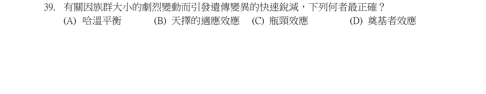
本地原卷PDF7 · 同年原答案PDF1（封存轉存本） · 已核對同年轉存生物釋疑PDF6–7（未列本題）
官方採計／來源：C 原答案：C
未列本輪取得同年公告的生物Q4、5、16；依原表，不宣稱不存在其他未取得公告
主分類：Ch23 The Evolution of Populations
23.3 / Genetic Drift
目錄行1455；條目起始印刷頁494；實際目錄 PDF41
主分類理由：23.3 / Genetic Drift：環境災害使族群骤減的抽樣損失是瓶頸型漂變。
次分類理由：無另列最小次條目；原題原族群劇減導致遺傳變異下降，瓶頸最合；不必另列一個目錄沒有的子目。
科學說明：原表C。經族群瓶頸後倖存者只攜帶原基因庫的一部分，遺傳變異可下降；不是另建新族群的創始者情境。族群數恢復也不保證遺傳多樣性完全恢復。
來源涵蓋範圍：依本地教材實際最小目錄與列示正文判斷；原題限定與來源差異另列，正文小標不冒充目錄。
教材正文：印刷494／PDF543、印刷495／PDF544、印刷496／PDF545
補充來源：本題未另列課本外來源
Q40 · 23.3 / Genetic Drift 正式分類
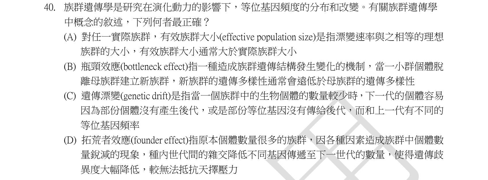
本地原卷PDF8 · 同年原答案PDF1（封存轉存本） · 已核對同年轉存生物釋疑PDF6–7（未列本題）
官方採計／來源：C 原答案：C
未列本輪取得同年公告的生物Q4、5、16；依原表，不宣稱不存在其他未取得公告
主分類：Ch23 The Evolution of Populations
23.3 / Genetic Drift
目錄行1455；條目起始印刷頁494；實際目錄 PDF41
次分類：Ch56 Conservation Biology and Global Change
56.2 / Extinction Risks in Small Populations
目錄行3755；條目起始印刷頁1266；實際目錄 PDF50
主分類理由：23.3 / Genetic Drift：比較漂變、創始者效應與瓶頸效應。
次分類理由：56.2 / Extinction Risks in Small Populations：有效族群及小族群滅絕風險是漂變強度的實際保育意義。
科學說明：原表C。漂變為隨機抽樣，對小有效族群影響較大；有效族群數通常小於普查數。創始者是少數個體建立新族群，瓶頸是原族群骤減，不混換兩者。
來源涵蓋範圍：依本地教材實際最小目錄與列示正文判斷；原題限定與來源差異另列，正文小標不冒充目錄。
教材正文：印刷494／PDF543、印刷495／PDF544、印刷496／PDF545、印刷1266／PDF1315、印刷1267／PDF1316、印刷1268／PDF1317
補充來源：本題未另列課本外來源
Q41 · 23.2 / The Hardy-Weinberg Equation 正式分類
本地原卷PDF8 · 同年原答案PDF1（封存轉存本） · 已核對同年轉存生物釋疑PDF6–7（未列本題）
官方採計／來源：A 原答案：A
未列本輪取得同年公告的生物Q4、5、16；依原表，不宣稱不存在其他未取得公告
主分類：Ch23 The Evolution of Populations
23.2 / The Hardy-Weinberg Equation
目錄行1445；條目起始印刷頁490；實際目錄 PDF41
次分類：Ch14 Mendel and the Gene Idea
14.3 / Extending Mendelian Genetics for a Single Gene
目錄行892；條目起始印刷頁278；實際目錄 PDF38
主分類理由：23.2 / The Hardy-Weinberg Equation：由O及A型表現型頻率回推IA等位頻率，屬多等位HW方程。
次分類理由：14.3 / Extending Mendelian Genetics for a Single Gene：A、B共顯性及O隱性解釋表現型與基因型合併。
科學說明：原表A，IA頻率0.30。O型r²=0.16得r=0.4；A型p²+2pr=0.33得p=0.3，IB頻率q=0.3。原題已給AB=0.18，以2pq=0.18驗算一致；不是求AB型頻率。B表現型0.33，四型合為1，依題設HW條件推算。
來源涵蓋範圍：依本地教材實際最小目錄與列示正文判斷；原題限定與來源差異另列，正文小標不冒充目錄。
教材正文：印刷279／PDF328、印刷280／PDF329、印刷490／PDF539、印刷491／PDF540、印刷492／PDF541、印刷493／PDF542
補充來源：本題未另列課本外來源
另行比較：題目要算AB比例還是IA等位頻率？
重看原圖已給AB=.18，要算IA=.30；修正首稿目標表述，並用AB作交叉驗算而非重當未知。
結論：證據確認，分類疑義已解決。完整覆核紀錄
Q42 · 28.4 / Red Algae 正式分類
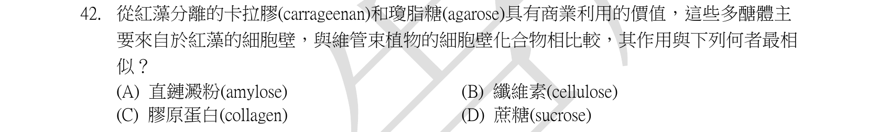
本地原卷PDF8 · 同年原答案PDF1（封存轉存本） · 已核對同年轉存生物釋疑PDF6–7（未列本題）
官方採計／來源：B 原答案：B
未列本輪取得同年公告的生物Q4、5、16；依原表，不宣稱不存在其他未取得公告
主分類：Ch28 Protists
28.4 / Red Algae
目錄行1827；條目起始印刷頁609；實際目錄 PDF42
次分類：Ch05 The Structure and Function of Large Biological Molecules
5.2 / Polysaccharides
目錄行242；條目起始印刷頁70；實際目錄 PDF36
主分類理由：28.4 / Red Algae：紅藻藻膠的功能是紅藻形態與應用的專屬內容。
次分類理由：5.2 / Polysaccharides：結構性與儲存性多醣對照決定纖維素的類比。
科學說明：原表B。Agarose與carrageenan是紅藻結構基質多醣；agarose是agar的主要膠化部分，功能類似植物纖維素；不是蛋白質collagen、儲存澱粉或雙醣sucrose。它們化學結構不同於纖維素，不把基質與微纖維混同。
來源涵蓋範圍：教材原理加具名補充；實讀段、時代與物種限制及下載失敗分存，不宣稱教材直接涵蓋全部專名。
教材正文：印刷70／PDF119、印刷71／PDF120、印刷72／PDF121、印刷609／PDF658、印刷610／PDF659
補充來源：S42
另行比較：原題是agar还是agarose，兩者能否全等？
改正為原圖agarose，說明其為agar主要膠化部分；紅藻基質與cellulose的功能類比保留化學差異。
結論：證據確認，分類疑義已解決。完整覆核紀錄
Q43 · 21.1 / The Human Genome Project fostered development of faster, less expensive sequencing techniques 正式分類
本地原卷PDF8 · 同年原答案PDF1（封存轉存本） · 已核對同年轉存生物釋疑PDF6–7（未列本題）
官方採計／來源：D 原答案：D
未列本輪取得同年公告的生物Q4、5、16；依原表，不宣稱不存在其他未取得公告
主分類：Ch21 Genomes and Their Evolution
21.1 / The Human Genome Project fostered development of faster, less expensive sequencing techniques
目錄行1293；條目起始印刷頁443；實際目錄 PDF40
次分類：Ch20 DNA Tools and Biotechnology
20.1 / DNA Sequencing
目錄行1232；條目起始印刷頁416；實際目錄 PDF40
主分類理由：21.1 / The Human Genome Project fostered development of faster, less expensive sequencing techniques：本地p444於21.1直接定義環境混合DNA定序為metagenomics，目錄此概念無更細子目。
次分類理由：20.1 / DNA Sequencing：定序技術是取得環境DNA資訊的方法。
科學說明：原表D。總體基因體學從整個微生物群或環境樣本取得混合DNA資訊，無須先個別培養。若僅用特定條碼基因擴增辨識物種，更精確可稱metabarcoding；題目以廣義環境DNA研究選metagenomics，保留方法粒度限制。
來源涵蓋範圍：依本地教材實際最小目錄與列示正文判斷；原題限定與來源差異另列，正文小標不冒充目錄。
教材正文：印刷416／PDF465、印刷417／PDF466、印刷418／PDF467、印刷443／PDF492、印刷444／PDF493
補充來源：本題未另列課本外來源
另行比較：Systems Level是否就是介紹metagenomics的最小目？
已找到本地p444在21.1直接定義，該概念目錄無子目；barcode題意與shotgun術語邊界同時保存。
結論：證據確認，分類疑義已解決。完整覆核紀錄
Q44 · 31.5 / Practical Uses of Fungi 正式分類
本地原卷PDF8 · 同年原答案PDF1（封存轉存本） · 已核對同年轉存生物釋疑PDF6–7（未列本題）
官方採計／來源：C 原答案：C
未列本輪取得同年公告的生物Q4、5、16；依原表，不宣稱不存在其他未取得公告
主分類：Ch31 Fungi
31.5 / Practical Uses of Fungi
目錄行2024；條目起始印刷頁670；實際目錄 PDF43
次分類：Ch31 Fungi
31.1 / Nutrition and Ecology
目錄行1966；條目起始印刷頁655；實際目錄 PDF43
主分類理由：31.5 / Practical Uses of Fungi：辨認中藥材中的真菌來源，屬真菌的實際用途。
次分類理由：31.1 / Nutrition and Ecology：真菌寄生或分解營養型有助辨識蟲草與茯苓。
科學說明：原表C：冬蟲夏草與茯苓。冬蟲夏草藥材為真菌子座及昆蟲體複合物，不能把整個蟲體都稱真菌；茯苓為真菌菌核。A牛樟芝與B靈芝也是菌，但其搭配的川芎、麥門冬為植物；D何首烏與當歸均為植物。藥典補足中文藥材基原，未對療效作主張。
來源涵蓋範圍：教材原理加具名補充；實讀段、時代與物種限制及下載失敗分存，不宣稱教材直接涵蓋全部專名。
教材正文：印刷655／PDF704、印刷667／PDF716、印刷668／PDF717、印刷669／PDF718、印刷670／PDF719
補充來源：S44
Q45 · 31.1 / Body Structure 正式分類
本地原卷PDF8 · 同年原答案PDF1（封存轉存本） · 已核對同年轉存生物釋疑PDF6–7（未列本題）
官方採計／來源：D 原答案：D
未列本輪取得同年公告的生物Q4、5、16；依原表，不宣稱不存在其他未取得公告
主分類：Ch31 Fungi
31.1 / Body Structure
目錄行1969；條目起始印刷頁655；實際目錄 PDF43
次分類：Ch27 Bacteria and Archaea
27.1 / Cell-Surface Structures
目錄行1709；條目起始印刷頁574；實際目錄 PDF42
主分類理由：31.1 / Body Structure：真菌細胞壁的幾丁質等成分屬菌體結構。
次分類理由：27.1 / Cell-Surface Structures：革蘭氏陰性菌外膜的LPS可排除錯誤歸屬。
科學說明：原表D。LPS是典型革蘭氏陰性細菌外膜成分；真菌壁以chitin、glucans及mannoproteins等為主，組成隨類群與階段不同，不把LPS列為一般真菌細胞壁成分。
來源涵蓋範圍：依本地教材實際最小目錄與列示正文判斷；原題限定與來源差異另列，正文小標不冒充目錄。
教材正文：印刷574／PDF623、印刷575／PDF624、印刷655／PDF704、印刷656／PDF705、印刷657／PDF706
補充來源：本題未另列課本外來源
另行比較：真菌壁與革蘭陰性菌外膜的LPS可否互換？
LPS屬細菌比較項，真菌chitin／glucan／mannoprotein組成有類群差異；主菌體結構確定。
結論：證據確認，分類疑義已解決。完整覆核紀錄
Q46 · 28.1 / Endosymbiosis in Eukaryotic Evolution 正式分類
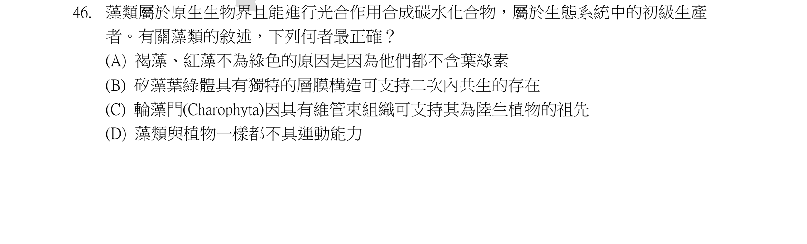
本地原卷PDF8 · 同年原答案PDF1（封存轉存本） · 已核對同年轉存生物釋疑PDF6–7（未列本題）
官方採計／來源：B 原答案：B
未列本輪取得同年公告的生物Q4、5、16；依原表，不宣稱不存在其他未取得公告
主分類：Ch28 Protists
28.1 / Endosymbiosis in Eukaryotic Evolution
目錄行1794；條目起始印刷頁594；實際目錄 PDF42
次分類：Ch28 Protists
28.3 / Stramenopiles
目錄行1814；條目起始印刷頁602；實際目錄 PDF42
主分類理由：28.1 / Endosymbiosis in Eukaryotic Evolution：矽藻複雜質體的多層膜反映次級內共生。
次分類理由：28.3 / Stramenopiles：矽藻在stramenopiles中的實例提供分類定位。
科學說明：原表B。矽藻質體有多層包膜，符合紅藻次級內共生史；不是所有原生生物都無葉綠素、不能運動或有真正根莖葉維管束。Protista是歷史方便稱呼而非單系群。
來源涵蓋範圍：依本地教材實際最小目錄與列示正文判斷；原題限定與來源差異另列，正文小標不冒充目錄。
教材正文：印刷594／PDF643、印刷595／PDF644、印刷596／PDF645、印刷602／PDF651、印刷603／PDF652
補充來源：本題未另列課本外來源
另行比較：矽藻多膜是否能獨立支持次級內共生？
選B，與本地28.1內共生圖及stramenopiles正文一致；原生生物非單系的歷史用語留存。
結論：證據確認，分類疑義已解決。完整覆核紀錄
Q47 · 27.1 / Internal Organization and DNA 正式分類
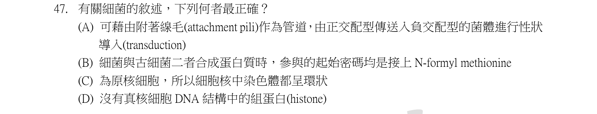
本地原卷PDF9 · 同年原答案PDF1（封存轉存本） · 已核對同年轉存生物釋疑PDF6–7（未列本題）
官方採計／來源：D 原答案：D
未列本輪取得同年公告的生物Q4、5、16；依原表，不宣稱不存在其他未取得公告
主分類：Ch27 Bacteria and Archaea
27.1 / Internal Organization and DNA
目錄行1715；條目起始印刷頁577；實際目錄 PDF42
次分類：Ch27 Bacteria and Archaea
27.2 / Genetic Recombination
目錄行1728；條目起始印刷頁579；實際目錄 PDF42
次分類：Ch27 Bacteria and Archaea
27.4 / Archaea
目錄行1754；條目起始印刷頁585；實際目錄 PDF42
主分類理由：27.1 / Internal Organization and DNA：細菌DNA與核區組織的傳統差異為題目主軸。
次分類理由：27.2 / Genetic Recombination：菌毛接合與噬菌體轉導需區別；27.4 / Archaea：古菌翻譯起始及染色體結構用於排除選项。
科學說明：原表D沿用細菌DNA不與histone包裝的傳統概括。2023研究已在Bdellovibrio及Leptospira找到histone，因此不能作全細菌絕對命題；其結合模式也不等同真核核小體。接合不是轉導，古菌起始胺基酸是Met非細菌常見fMet，原核細胞沒有核膜。
來源涵蓋範圍：教材原理加具名補充；實讀段、時代與物種限制及下載失敗分存，不宣稱教材直接涵蓋全部專名。
教材正文：印刷330／PDF379、印刷331／PDF380、印刷577／PDF626、印刷579／PDF628、印刷580／PDF629、印刷583／PDF632、印刷585／PDF634、印刷586／PDF635
補充來源：S47
另行比較：傳統D是否仍是全細菌無例外的事實？
保留原D採計但標2023真正細菌histone反例；原A附著菌毛／接合／轉導亦分清，非把原核有細胞核的C說成正確。
結論：證據確認，分類疑義已解決。完整覆核紀錄
Q48 · 31.4 / Fungi have radiated into a diverse set of lineages 正式分類
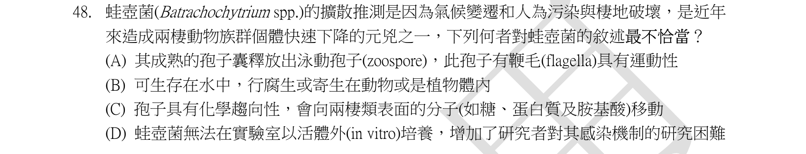
本地原卷PDF9 · 同年原答案PDF1（封存轉存本） · 已核對同年轉存生物釋疑PDF6–7（未列本題）
官方採計／來源：D 原答案：D
未列本輪取得同年公告的生物Q4、5、16；依原表，不宣稱不存在其他未取得公告
主分類：Ch31 Fungi
31.4 / Fungi have radiated into a diverse set of lineages
目錄行1995；條目起始印刷頁660；實際目錄 PDF43
次分類：Ch31 Fungi
31.1 / Nutrition and Ecology
目錄行1966；條目起始印刷頁655；實際目錄 PDF43
次分類：Ch54 Community Ecology
54.5 / Effects on Community Structure
目錄行3656；條目起始印刷頁1234；實際目錄 PDF50
主分類理由：31.4 / Fungi have radiated into a diverse set of lineages：壺菌的游動孢子與生物學特徵屬真菌支系；本地目錄31.4沒有獨立Chytrids子目。
次分類理由：31.1 / Nutrition and Ecology：真菌寄生營養支援病原特徵；54.5 / Effects on Community Structure：兩生類病原對群集結構的影響保留為次條目。
科學說明：原表D。蛙壺菌Batrachochytrium dendrobatidis在原始研究已離體純培養並接種蛙，故不能稱無法培養。壺菌常有具鞭毛游走孢子；一般壺菌腐生／寄生範圍不能全套在單一蛙壺菌，兩生類下降也不能歸因唯一環境因子。原題為Batrachochytrium spp.，本輪培養與趨化研究明確限Bd：2008研究測得糖、蛋白與胺基酸的正趨化，不能擴大成所有屬內物種皆在植物體內寄生。
來源涵蓋範圍：教材原理加具名補充；實讀段、時代與物種限制及下載失敗分存，不宣稱教材直接涵蓋全部專名。
教材正文：印刷655／PDF704、印刷660／PDF709、印刷661／PDF710、印刷662／PDF711、印刷1234／PDF1283、印刷1235／PDF1284
補充來源：S48
另行比較：原題屬內spp是否能套單一物種研究？
純培養與趨化以Bd具名研究作反例／補充；不將一般壺菌植物寄生套整個蛙壺菌屬。D錯與31.4分類均有直接依據。
結論：證據確認，分類疑義已解決。完整覆核紀錄
Q49 · 31.1 / Specialized Hyphae in Mycorrhizal Fungi 正式分類
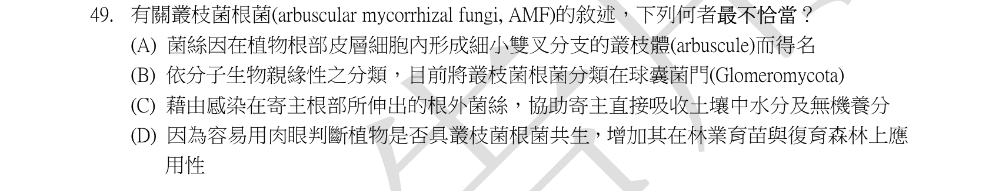
本地原卷PDF9 · 同年原答案PDF1（封存轉存本） · 已核對同年轉存生物釋疑PDF6–7（未列本題）
官方採計／來源：D 原答案：D
未列本輪取得同年公告的生物Q4、5、16；依原表，不宣稱不存在其他未取得公告
主分類：Ch31 Fungi
31.1 / Specialized Hyphae in Mycorrhizal Fungi
目錄行1972；條目起始印刷頁656；實際目錄 PDF43
次分類：Ch31 Fungi
31.4 / Mucoromycetes
目錄行2005；條目起始印刷頁663；實際目錄 PDF43
次分類：Ch37 Soil and Plant Nutrition
37.3 / Fungi and Plant Nutrition
目錄行2466；條目起始印刷頁817；實際目錄 PDF45
主分類理由：31.1 / Specialized Hyphae in Mycorrhizal Fungi：內生菌根菌絲穿壁但不穿破宿主質膜，直接屬特化菌絲。
次分類理由：31.4 / Mucoromycetes：本地將glomeromycetes置於Mucoromycota，保留題目Glomeromycota分類差異；37.3 / Fungi and Plant Nutrition：菌根介面及植物營養交換有明確正文支援。
科學說明：原表D。叢枝結構為顯微尺度，不能單憑肉眼根部觀察確診；菌絲穿細胞壁後仍被內陷宿主膜隔開，不自由位於細胞質。本地p663採Mucoromycota內glomeromycetes，題目採Glomeromycota；名稱層級差異明記，不擅改原題。
來源涵蓋範圍：依本地教材實際最小目錄與列示正文判斷；原題限定與來源差異另列，正文小標不冒充目錄。
教材正文：印刷656／PDF705、印刷657／PDF706、印刷663／PDF712、印刷817／PDF866、印刷818／PDF867
補充來源：本題未另列課本外來源
另行比較：叢枝是否裸露於宿主細胞質且可肉眼確診？
p656／817–818明確穿壁不穿破膜且為顯微尺度；Mucoromycota與原Glomeromycota差異保留。
結論：證據確認，分類疑義已解決。完整覆核紀錄
Q50 · 31.2 / Sexual Reproduction 正式分類
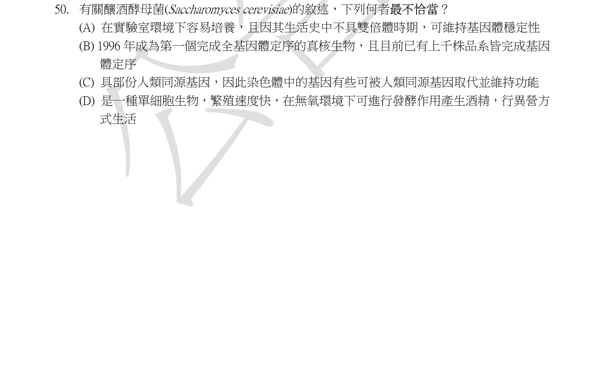
本地原卷PDF9 · 同年原答案PDF1（封存轉存本） · 已核對同年轉存生物釋疑PDF6–7（未列本題）
官方採計／來源：A 原答案：A
未列本輪取得同年公告的生物Q4、5、16；依原表，不宣稱不存在其他未取得公告
主分類：Ch31 Fungi
31.2 / Sexual Reproduction
目錄行1979；條目起始印刷頁658；實際目錄 PDF43
次分類：Ch31 Fungi
31.2 / Asexual Reproduction
目錄行1982；條目起始印刷頁658；實際目錄 PDF43
次分類：Ch21 Genomes and Their Evolution
21.6 / Comparing Genomes
目錄行1359；條目起始印刷頁459；實際目錄 PDF40
主分類理由：31.2 / Sexual Reproduction：酵母的單／二倍體與減數、有性生活史決定錯誤敘述。
次分類理由：31.2 / Asexual Reproduction：出芽與無性增殖用於比較；21.6 / Comparing Genomes：跨物種基因組相似及人類基因互補屬比較基因組。
科學說明：原表A。S. cerevisiae可有單倍體與二倍體，並非只單倍體。1996首個完成真核基因組；2018研究1011株含918新定序及93既有，時間早於本試題。部分人類同源基因能互補酵母，不是全部；发酵與呼吸依環境條件而變。
來源涵蓋範圍：教材原理加具名補充；實讀段、時代與物種限制及下載失敗分存，不宣稱教材直接涵蓋全部專名。
教材正文：印刷449／PDF498、印刷459／PDF508、印刷460／PDF509、印刷461／PDF510、印刷657／PDF706、印刷658／PDF707、印刷659／PDF708
補充來源：S50
另行比較：酵母是否無二倍體，或研究時間晚於原卷？
SGD明有單倍與二倍，2018千株研究早於108年度；原A錯點明確，不把部分人類基因互補誇大全部。
結論：證據確認，分類疑義已解決。完整覆核紀錄
目前篩選沒有符合的題目；本年度總數仍為50題。
補充來源
查證日期：2026-09-10。使用原始研究摘要、官方資料與作者教材，不宣稱所有出版商全文已取得。詳細界線見來源紀錄。
- S03 Graziano et al. 1994 Histone H1 in chromatin 30 nm filament
H1參與傳統30nm纖維模型，補足本地新版正文未列H1的細節。
實讀範圍：PubMed研究摘要及搜尋索引顯示的中子散射結論
原始來源1
限制：離體染色質結構證據，不宣稱所有細胞內均有規整30nm纖維。 - S05 Tal and Taylor Endocrinology of Pregnancy, Endotext
妊娠第一期後胎盤是循環雌二醇主要來源；雌激素增加子宮催產素受體表達與敏感性。
實讀範圍：PLACENTAL 17β-ESTRADIOL與分娩oxytocin段落
原始來源1
限制：與同年釋疑及Campbell圖46.18的卵巢來源簡化說法有差異；不以科學補充改寫官方A。 - S06 Marks, Ling and Cone 2001 Role of the central melanocortin system in cachexia
中樞MC4R刺激連結食慾下降與代謝增加；LPS與腫瘤鼠模型的阻斷能緩解惡病質。
實讀範圍：完整PubMed摘要，尤其MC4R阻斷與剔除鼠實驗
原始來源1
限制：鼠模型，不把所有癌症或心衰竭病人的惡病質归因於單一激素，也不是療效建議。 - S07 Janeway Immunobiology: complement system and innate immunity
DAF使轉化酶解離；factor I在CR1或MCP協助下蛋白水解C3b。
實讀範圍：DAF、CR1、MCP、factor I的調節段
原始來源1
限制：原題將DAF說成使C3b裂解過度簡化；B辨識的是C3b，不背書原句全部機制。 - S13 Medical Microbiology: Antimicrobial Chemotherapy
quinolones靶向DNA gyrase等拓樸異構酶，非破壞細胞膜；其他三類藥物靶點分別與題意相符。
實讀範圍：DNA合成、葉酸代謝、細胞壁及蛋白質合成抑制劑段落
原始來源1
限制：本地章節僅提供抗生素與細菌背景，具體藥物靶點由本來源補足。 - S14 Janeway Immunobiology: generation of T-cell receptor ligands
TAP將細胞質肽運入ER裝載MHC I；invariant chain屬MHC II途徑。
實讀範圍：TAP及病毒阻斷MHC I段落、invariant chain與MHC II段落
原始來源1
限制：不把MHC II invariant chain當作CTL辨識的MHC I機制。 - S17 Jin et al. 2003 MDM2 promotes p21 proteasomal turnover independently of ubiquitylation
p21可經不依賴泛素化的蛋白酶體路徑周轉。
實讀範圍：兩篇PubMed研究摘要；MDM2及REGgamma的p21降解結果
原始來源1 · 原始來源2
限制：原題用主要而非唯一；非泛素途徑只證明多層控制，不能以反例數量認定任何條件下何者為主。 - S18 Cooper The Cell: The Mechanism of Vesicular Transport
COPII運送ER至Golgi；COPI主要回收，clathrin另有轉高基網／內吞路線。
實讀範圍：COPII正向與COPI回收、包被組裝段落
原始來源1
限制：教材的內膜系統段落支援分類，本來源補足包被名稱。 - S19 SIB ExPASy PeptideCutter cleavage specificities
理想高專一性切位為K/R、F/Y/W、M；肽段數等於有效內部切位數加1。
實讀範圍：Trypsin、Chymotrypsin高低專一性及CNBr切位表
原始來源1
限制：原題沒交代反應條件；低專一性chymotrypsin另切L/M等，不能當唯一實驗產物預測。 - S21 McGhee The C. elegans intestine, WormBook
EMS→E→腸道；P2訊號對EMS有誘導作用但不是腸道譜系祖細胞。
實讀範圍：EMS分裂成MS與E的譜系段落
原始來源1
限制：四細胞時期尚無E，不能把較晚出現的E作本題選项。 - S35 Weeks 1999 Oxpeckers and domestic cattle in Zimbabwe
紅嘴牛椋鳥在家牛常啄傷口血液，提示非必然互利。
實讀範圍：完整研究摘要，含最後對原生宿主外推的限制
原始來源1
限制：研究家牛Bos taurus；原題僅寫水牛buffalo，物種未定，作者明示不宜外推原生非洲宿主。官方B保留，不宣稱已證成所有水牛互動皆非互利。 - S36 Kaplan et al. 1986 Azolla-Anabaena XII; contemporary endobiont study
滿江紅與具異形細胞的固氮藍綠菌共生。
實讀範圍：兩篇摘要，1986原位異形細胞與固氮活性、2025共生與細胞交換結果
原始來源1 · 原始來源2
限制：歷史Anabaena azollae與文獻Nostoc azollae名稱並存；本題判別cyanobacteria而不強制改分類名稱。 - S37 中央研究院臺灣魚類資料庫 Scartelaos gigas
大青彈塗魚生活於河口紅樹林半淡鹹水與海水環境，支持本題鹽度適應的選項A。
實讀範圍：物種名、棲息水域、分布與棲地全文
原始來源1
限制：此頁為棲地資料不是生理耐鹽實驗，不能據此給出鹽度極限；不把一般洄游鮭的例子直接套用臺灣陸封鮭。 - S38 Liu et al. 2022 The Cycas genome and early evolution of seed plants
核與葉綠體分析支持蘇鐵與銀杏成姊妹群；粒線體結果不同。
實讀範圍：研究摘要及主要結果的核／葉綠體與粒線體拓樸差異
原始來源1
限制：本地12e圖30.4保留關係未定，不能隱去資料集差異；不是所有資料一致確證。 - S42 FAO seaweed hydrocolloids, Norman Stanley carrageenan chapter
紅藻藻膠為結構性基質多醣，功能類比陸生植物纖維素。
實讀範圍：Carrageenans introduction及carrageenan原料介紹
原始來源1 · 原始來源2
限制：化學結構不是纖維素，不將基質成分等同纖維素微纖維；本地紅藻段不直接列全部藻膠。 - S44 衛福部臺灣中藥典基原表與第四版通則
冬蟲夏草基原真菌與蟲體複合體；茯苓為真菌菌核，名稱Poria cocos／Wolfiporia extensa留存。
實讀範圍：搜尋索引可讀的冬蟲夏草品項54及茯苓基原修正項28，非整部藥典逐頁閱讀
原始來源1 · 原始來源2
限制：僅作物種來源查核，不對藥效或使用量作說明。 - S47 Hocher et al. 2023 Histones in Bdellovibrio bacteriovorus
Bdellovibrio與Leptospira含真正histone蛋白，是細菌一概沒有組蛋白的反例。
實讀範圍：研究摘要及開頭的菌種與結構結果
原始來源1
限制：2019試題採傳統概括D；細菌histone的DNA結合不等同真核核小體，後來研究不追溯改官方答案。 - S48 Longcore, Pessier and Nichols 1999; Maine Chytrid Laboratory; Moss et al. 2008 chemotaxis
蛙壺菌已成功離體純培養並由培養物接種蛙，因此D錯。；Bd的趨化由具名研究補足。
實讀範圍：搜尋索引完整摘要的純培養、營養瓊脂與接種結果；研究者實驗室分類條目；Moss研究摘要顯示糖、蛋白與胺基酸正趨化
原始來源1 · 原始來源2 · 原始來源3
限制：期刊直接開啟受限，摘要索引與原研究者頁交叉支持；未宣稱讀完論文9頁或任何治療試驗。 - S50 SGD yeast biology, original genome project and Peter et al. 2018
釀酒酵母可單倍體與二倍體；1996首個真核基因組；2018研究含1011株，其中918新定序加93既有。
實讀範圍：SGD倍數與生活史段、1996原公布、2018研究摘要與样本方法
原始來源1 · 原始來源2 · 原始來源3
限制：本地p460另支援部分人類基因可互補；不是所有基因皆可取代。